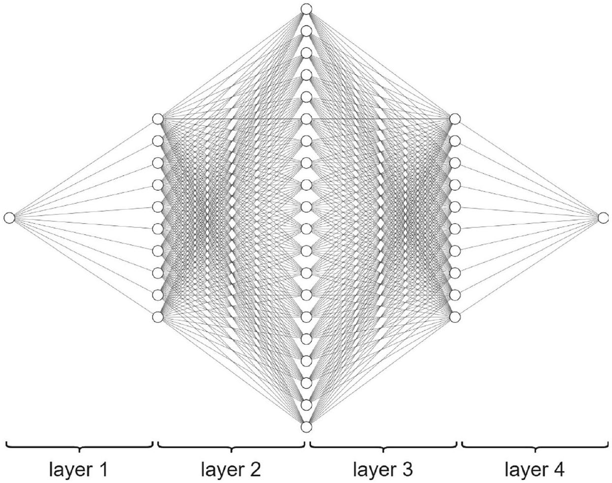
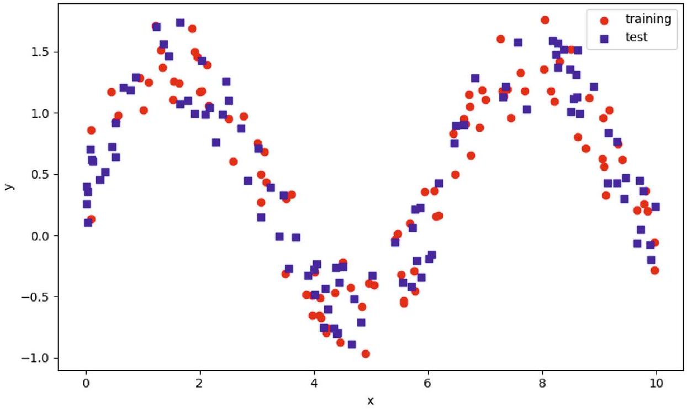
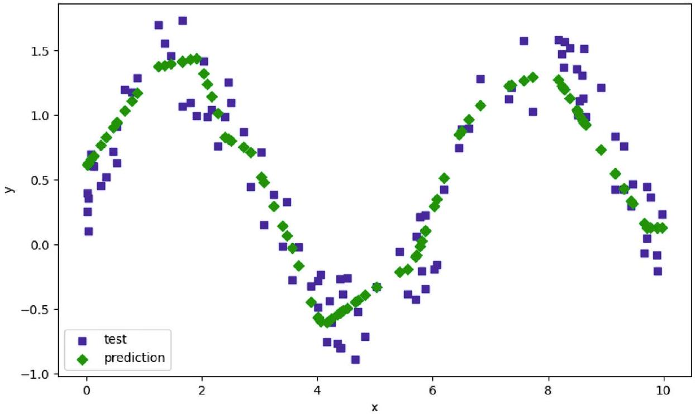
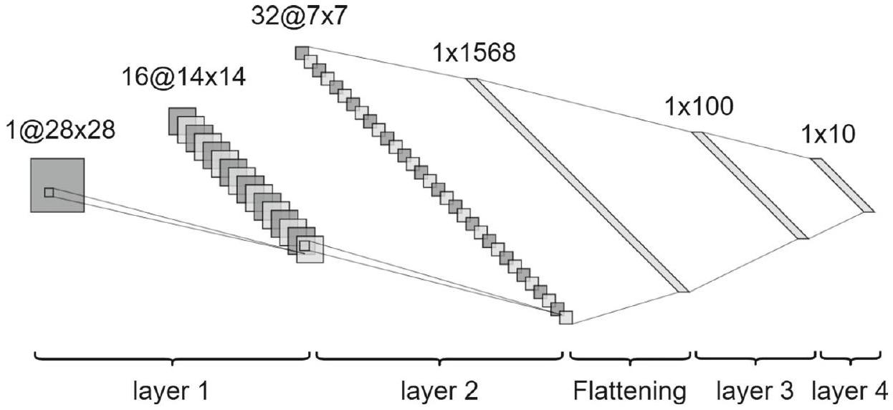
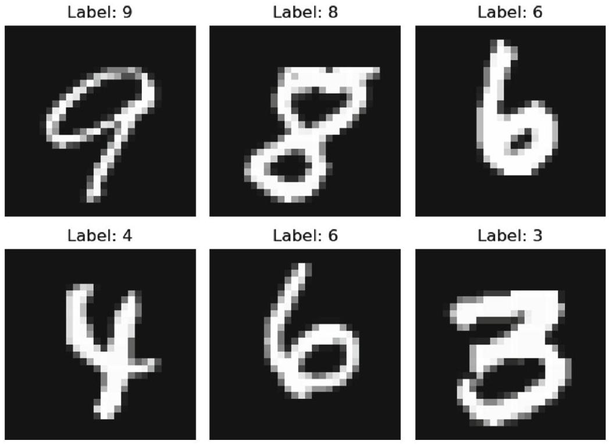
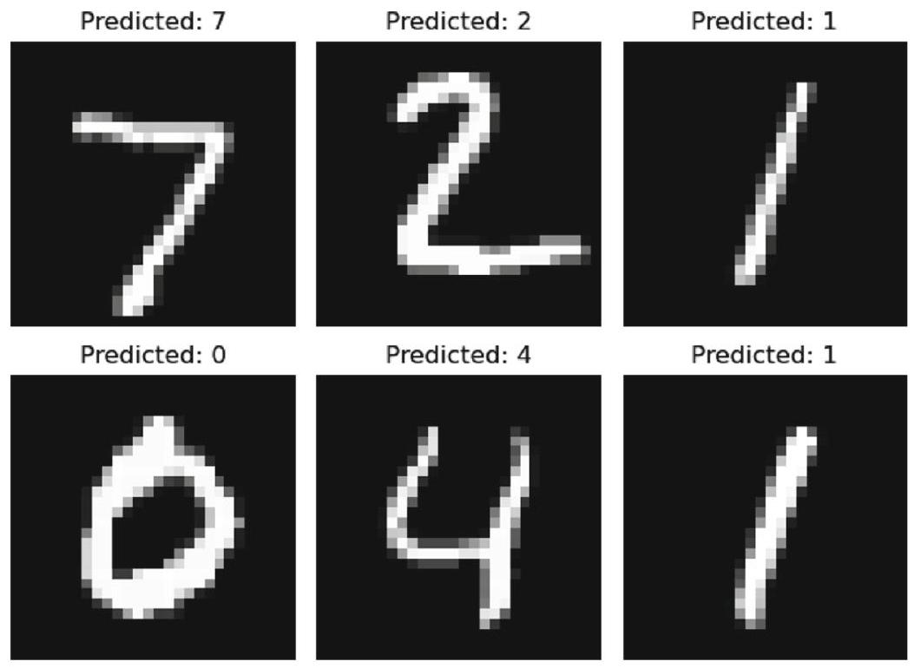

導論：從函式庫到動手寫程式
▼這一章要做什麼：從理論走向實作
前面二十一章都在講「深度學習的道理」——神經網路怎麼運作、怎麼訓練、各種架構背後的數學。這一章換個角度，講「怎麼真的動手把它寫出來」。
具體來說，本章分成兩大塊：
- §2 深度學習函式庫：介紹市面上有哪些工具可以用來寫神經網路（§2.1），以及訓練過程中用來記錄、視覺化訓練進度的工具（§2.2）。這一塊比較像是一份「工具地圖」，告訴你目前這個生態系裡誰是誰、誰贏了誰輸了。
- §3 PyTorch 範例程式：實際給出可以動手跑的 PyTorch 程式碼，包含一個前饋神經網路做迴歸任務（§3.2），以及一個卷積神經網路做分類任務（§3.3）。
讀這章之前，建議先做的事
原文特別提醒：最好先讀懂前面章節的理論基礎，再回頭看這章的程式碼實作。原因很直覺——程式碼裡出現的每一行，背後都對應到前面某一章講過的觀念（例如 nn.ReLU() 對應到激活函數那一章、CrossEntropyLoss 對應到分類損失函數那一章）。如果理論還沒搞懂就硬啃程式碼，會變成「照抄能跑，但不知道為什麼要這樣寫」。
本章路線圖
跟著這張地圖走：
- §2.1 神經網路程式庫：介紹 Theano、Caffe、TensorFlow、PyTorch……等十幾個函式庫的興衰史，重點是搞懂「為什麼今天大家幾乎都用 PyTorch」。
- §2.2 記錄與視覺化工具：TensorBoard、W&B、MLflow 這些用來追蹤訓練進度的工具。
- §3.1 套件匯入與初始設定：寫程式前要先 import 哪些套件、怎麼決定用 CPU 還是 GPU。
- §3.2 前饋神經網路（迴歸任務）：完整的一份範例程式，從定義網路、設定優化器、準備資料、訓練、到測試。
- §3.3 卷積神經網路（分類任務）：另一份完整範例，這次是用 CNN 在 MNIST 手寫數字資料集上做分類。
口語小結：這一章是「工具箱導覽 + 動手實作說明書」——先搞懂江湖上有哪些兵器（函式庫），再親手跟著兩份完整的 PyTorch 範例程式碼走一遍，從零到能訓練、能測試。
🤖 AI 生圖提示詞
WHAT（骨架）: 三個依序排列的方框代表本章三階段（§2.1 函式庫生態系導覽 → §2.2 記錄視覺化工具 → §3 PyTorch實戰範例），中間用粗箭頭連接，最後一個方框用深色高亮並標「動手寫」徽章。底部一條分隔線下方三句對齊的說明文字，再下方一條橘色虛線弧線橫跨全寬，標註本章定位的一句話。 WHY（因果或反直覺）: 這一章跟全書其他理論章節不同——它是「從認識工具到親手實作」的轉折點。讀者可能誤以為這只是工具清單，但實際上它是把前面 21 章的數學理論真正落地成可執行程式碼的橋樑。 MUST show（必備要素）: ① 三個階段方框由左到右依序排列並用箭頭連接；② 最後一個方框（§3）視覺上比前兩個更突出（深色/高亮），代表這是本章的重點與終點；③ 底部橘色虛線弧線 + 一句話標語，強調「理論→實作」的轉折。 AVOID（禁止）: 不要把三個階段畫成同樣份量、沒有輕重之分；不要用純文字方框堆疊沒有箭頭因果關係；不要漏掉「動手寫程式碼」這個核心轉折訊息。 STYLE: flat vector, viewBox 720×360, 青綠色主題（主 #0f766e、深 #134e4a、淺底 #effcf9/#ccfbf1），白底，Arial，橘色 #ea580c/#c2410c 做轉折強調，圓角、粗線條、無陰影無漸層。
本章建議讀者在閱讀程式碼範例之前，應該先做什麼？
本章 §3 提供的兩份 PyTorch 範例程式碼，分別對應哪兩種任務？
本章 §2 涵蓋的兩大類工具是什麼？
早期函式庫：Theano、Caffe、Lasagne——先驅但已成歷史
▼深度學習工具的「史前時代」
在 PyTorch、TensorFlow 稱霸的今天，很容易忘記深度學習的工具鏈也是一路演化過來的。這裡介紹三個「先驅但已成歷史」的函式庫——它們曾經很重要，但今天都已經停止維護或被淘汰。
Theano：最早的深度學習函式庫之一
Theano 由 Yoshua Bengio 與蒙特婁大學的學生從 2007 到 2010 年開發，是最早的深度學習函式庫之一。它能定義、最佳化、求值涉及多維向量與矩陣的數學表達式——這聽起來很像今天所有深度學習框架的核心功能，因為 Theano 某種程度上就是這一切的起點。
問題出在語法太複雜，限制了它的普及，最終在 2017 年停止支援。
Caffe：電腦視覺界的常客
Caffe 由柏克萊視覺與學習中心在 2013 到 2014 年開發。它的高速度與大量現成的預訓練模型，讓它在電腦視覺應用中曾經非常受歡迎。
但它對非卷積神經網路與動態架構的彈性有限——換句話說，只要你想做的不是「標準的 CNN」，Caffe 就會綁手綁腳。隨著研究越來越需要靈活的架構，研究者逐漸對它失去興趣。
Lasagne：Theano 的友善封裝
Lasagne 在 2014 年發布，是建立在 Theano 之上的輕量級函式庫。它提供更友善的封裝，模組化、容易定義神經網路。
但正因為它是「Theano 的外殼」，Theano 有的問題它也躲不掉——繼承了 Theano 的靜態圖限制。隨著 Theano 停止維護，Lasagne 也跟著棄用，現在已經沒人維護。
三者的共同命運
| 函式庫 | 年份 | 開發者 | 核心優勢 | 為什麼式微 |
|---|---|---|---|---|
| Theano | 2007–2010 | Bengio 團隊 | 最早能定義/最佳化數學表達式 | 語法複雜，2017 停止支援 |
| Caffe | 2013–2014 | 柏克萊 BVLC | 速度快、預訓練模型多 | 對非 CNN、動態架構彈性差 |
| Lasagne | 2014 | 社群 | Theano 的友善封裝 | 繼承 Theano 靜態圖限制，隨其棄用 |
口語小結：這三個函式庫代表深度學習工具鏈的「開拓期」——它們證明了「用程式庫定義神經網路」這件事可行，但也各自因為語法複雜、彈性不足、或依賴了會被淘汰的底層技術，最終讓位給後來者。
🤖 AI 生圖提示詞
WHAT（骨架）: 一條時間軸橫貫全圖（2007→2010→2014→2017），上方兩個節點 Theano、Lasagne 各自連到時間軸，下方一個節點 Caffe 獨立連到時間軸；Theano 與 Lasagne 之間有一條虛線箭頭標「建立在其上」；三個節點最終都在時間軸上被打叉標示「已停止維護/棄用/出走」。 WHY（因果或反直覺）: 三個早期函式庫看似各自獨立的技術選擇，但 Theano 與 Lasagne 之間存在依賴關係——上游函式庫停止支援，會直接拖垮建立在其上的下游函式庫，即使下游本身設計良好。 MUST show（必備要素）: ① 時間軸與四個年份標記；② Theano→Lasagne 的「建立在其上」依賴虛線箭頭；③ 三個節點各自的打叉/淡出標記，代表三種不同的衰退方式（停止支援 vs 使用者出走 vs 棄用）；④ 底部一句話點出依賴關係造成的連帶命運。 AVOID（禁止）: 不要把三個函式庫畫成互不相關的三個獨立方框；不要省略 Theano→Lasagne 的依賴箭頭這個因果核心；不要用完全一樣的視覺處理呈現三者的衰退原因（三者衰退機制不同，應有區別）。 STYLE: flat vector, viewBox 720×360, 青綠色主題（主 #0f766e、深 #134e4a、淺底 #effcf9），白底，Arial，紅色 #e53e3e/#c53030 標示衰退/停止，灰色 #94a3b8 表次要節點，橘色 #ea580c/#c2410c 做結論強調，圓角、粗線條、無陰影無漸層。
Theano 最終在哪一年停止支援，主要原因是什麼？
Caffe 的主要局限是什麼？
Lasagne 為什麼會隨著 Theano 一起被棄用？
TensorFlow 與 Keras：Google 生態系的雙主力
▼TensorFlow：兼顧研究彈性與生產部署
TensorFlow 由 Google Brain 在 2015 年開發，設計目標是同時兼顧彈性與大規模生產部署——這跟前面 Theano、Caffe 那種「只顧著把模型跑起來」的思路不太一樣，TensorFlow 從一開始就考慮了「這東西之後要怎麼真的上線服務」。
它早期的一大貢獻是 TensorBoard（視覺化工具），廣受好評——這個工具重要到後面 §2.2 會專門介紹。
TensorFlow 的版本演進也是一段值得記住的故事：
- TensorFlow 1：用靜態計算圖，先把整個運算流程定義好才能執行，這讓除錯變得很複雜（出錯了很難知道是哪一步的問題）。
- TensorFlow 2：引入動態圖特性（eager execution，意思是「寫一行、馬上執行一行」），並整合 Keras，大幅改善了易用性。
TensorFlow 至今在學界與業界都仍然流行。
Keras：從「簡單易用」到「整合進 TensorFlow」
Keras 首次創建於 2015 年，原本的設計目標是讓建構神經網路變得簡單，但早期版本在進階研究應用上比較受限、不夠靈活。
今天，Keras 已經完全整合進 TensorFlow（也就是大家常看到的 tf.keras）。這個整合讓它同時具備兩種使用模式：
- 簡單的「即插即用」：適合快速搭建標準架構，不用操心底層細節。
- 進階客製化：研究者現在也可以自己一步步寫訓練迴圈，不必只依賴 Keras 內建的自動訓練函式。
口語復盤
TensorFlow 跟 Keras 的故事，其實是「兩條路線最後合流」的故事：TensorFlow 一開始重視生產部署但除錯痛苦（TF1 靜態圖），Keras 一開始重視易用性但不夠靈活；TensorFlow 2 把兩者的優點揉在一起——動態圖解決除錯痛苦、整合 Keras 解決易用性問題。
口語小結：TensorFlow 是 Google 生態系的主幹，Keras 是它的易用層——兩者現在已經合體（tf.keras），同時服務「想要簡單」跟「想要客製化」兩種需求，這正是它們至今仍活躍的原因。
🤖 AI 生圖提示詞
WHAT（骨架）: 左側方框「TensorFlow 1」內畫一個用虛線鎖住的靜態圖（幾個圓點節點連線但被鎖框包住），標「圖先固定好才能跑」；右側方框「TensorFlow 2」內畫一串可以連續即時串接生長的動態鏈（圓點+箭頭一路連續延伸出方框），標「邊寫邊跑」；中間粗箭頭「自我進化」連接兩者；下方額外一個小方框「Keras 整合進來 → tf.keras」用箭頭從 TF2 主框連下來。 WHY（因果或反直覺）: 讀者可能誤以為 TensorFlow 2 是全新框架取代了 TensorFlow 1，但事實上是同一個框架自己升級解決了自己早期造成的除錯困難問題（靜態圖→動態圖），而不是被競爭對手淘汰。 MUST show（必備要素）: ① 左側鎖住的靜態圖視覺（圖被固定住無法即時互動）；② 右側可連續生長的動態圖視覺（節點鏈可即時延伸）；③ 中間「自我進化」箭頭，不是「取代」箭頭；④ Keras 整合進 TF2 的附屬說明；⑤ 底部強調「同一個框架自己修好痛點」而非「換框架」。 AVOID（禁止）: 不要畫成兩個完全獨立不相關的框架（會誤導成競品取代關係）；不要省略「自我進化」這個因果標籤；不要漏掉 Keras 整合這個關鍵細節。 STYLE: flat vector, viewBox 720×360, 青綠色主題（主 #0f766e、深 #134e4a、淺底 #effcf9）搭配左側紅色 #e53e3e/#b91c1c 代表舊版痛點、右側青綠色代表新版優勢，底部紫色 #7c3aed/#5b21b6 標示 Keras 整合，白底，Arial，圓角、粗線條、無陰影無漸層。
TensorFlow 1 與 TensorFlow 2 最主要的差異是什麼？
TensorFlow 早期一項廣受好評的貢獻是什麼？
今天的 Keras 與 TensorFlow 的關係是什麼？
曾經重要、現已式微的函式庫：MXNet、CNTK、Chainer、DL4J、PaddlePaddle
▼五個「曾經有一席之地」的函式庫
深度學習函式庫的世界競爭激烈，這裡介紹五個曾經各自佔有一片天地、但今天使用率都已明顯下降的函式庫。它們的共同命運是：曾經有獨特優勢，但最終都敵不過 TensorFlow、PyTorch（或後來的 JAX）的生態系規模。
MXNet：曾經的 AWS 首選
MXNet 於 2015 年由 Apache 發布，後來獲得 Amazon 大力支持。它以可擴展性與分散式運算速度著稱，曾是 AWS 服務的首選深度學習後端。
但自 2022 年起開發放緩，今天社群規模已經遠小於 TensorFlow、PyTorch 或 JAX，很少再被優先選用。
CNTK：微軟認知工具包
CNTK（Microsoft Cognitive Toolkit）由微軟在 2016 年開發，主要優勢是高效能訓練引擎，曾在微軟內部用於語音與影像任務。
但它的 API 難以使用、缺乏社群支持，2020 年停止開發，在微軟自家專案中也被 PyTorch 取代。
Chainer：啟發 PyTorch 的先行者
Chainer 是 2015 年發布的日本函式庫，是第一個引入 define-by-run（動態圖）運算的主要函式庫——這個設計理念後來直接啟發了 PyTorch 的架構。
Chainer 為研究提供了很大的彈性，在研究者間一度受歡迎，但在某些應用場景中比靜態框架慢。2019 年最後一次主要發布後，開發轉向支持 PyTorch。
這裡有個值得記住的反差：Chainer 啟發了 PyTorch，但最終自己被 PyTorch 取代——開創性的想法不一定能保住市場地位。
DL4J：JVM 世界的深度學習
Deeplearning4j（DL4J）於 2016 年發布，用 Java 開發並搭配 Python 綁定，專為 JVM（Java 虛擬機）企業應用場景設計，能整合 Hadoop 與 Spark。
但它不是 Python 原生，生態系規模也比 TensorFlow、PyTorch 小得多。今天大多數深度學習工作都在 Python 框架中進行，所以 DL4J 的應用範圍雖然仍在維護但相對侷限。
PaddlePaddle：中國第一個大規模開源平台
PaddlePaddle 由百度在 2016 年開發，是中國第一個大規模開源深度學習平台，注重生產就緒與大規模應用。
在全球範圍它較不流行，且歷史上文件對非中文使用者較不友善。但在中國，它仍持續積極開發。
五者對照表
| 函式庫 | 年份 | 開發者/靠山 | 核心優勢 | 式微原因 |
|---|---|---|---|---|
| MXNet | 2015 | Apache／Amazon | 可擴展性、分散式速度快 | 2022後開發放緩 |
| CNTK | 2016 | 微軟 | 高效能訓練引擎 | API難用、缺乏社群，2020停止開發 |
| Chainer | 2015 | 日本社群 | 首創define-by-run動態圖 | 啟發PyTorch後被其取代 |
| DL4J | 2016 | 社群 | JVM企業整合(Hadoop/Spark) | 非Python原生，生態系小 |
| PaddlePaddle | 2016 | 百度 | 中國首個大規模開源平台 | 全球較不流行，文件在地化不足 |
口語小結：這五個函式庫各自曾經找到一個利基（分散式運算、企業內部工具、JVM整合、中國市場……），但深度學習生態系最終高度集中到 Python 世界裡的少數幾個框架，讓它們的舞台越來越小。
🤖 AI 生圖提示詞
WHAT（骨架）: 五個並排方框，分別代表 MXNet、CNTK、Chainer、DL4J、PaddlePaddle，每個方框內用一個貼合其特色的小圖示（分散式節點網路、語音波形方塊、define-by-run齒輪／圓圈、Java咖啡杯、熊貓橢圓輪廓），每個方框下方各自一條淡橘色小衰退弧線與一句簡短的衰退原因；底部一條共同的「熱度」折線圖，五個時間點皆往右下方遞減；最底部一句結論。 WHY（因果或反直覺）: 這五個函式庫背景、應用場景、開發公司完全不同（分散式運算、企業語音、學術研究、JVM企業、中國市場），照理不該有共同命運，但它們最終都走向了同一個結局——被 TensorFlow/PyTorch/JAX 邊緣化。 MUST show（必備要素）: ① 五個方框各自的特色小圖示（不是純文字名稱）；② 每個方框下方各自不同的衰退原因短句；③ 底部一條共同向右下遞減的「熱度」折線圖，把五者的命運串在一起；④ 結論句點出「背景各異、殊途同歸」。 AVOID（禁止）: 不要把五個圖示畫成完全相同的通用方塊圖示（每個要能反映其實際特色）；不要省略底部串連五者命運的熱度折線圖；不要讓五個方框的視覺份量不均。 STYLE: flat vector, viewBox 720×380, 青綠色主題（主 #0f766e、深 #134e4a、淺底 #effcf9）搭配橘色 #ea580c/#c2410c 標示各自衰退原因與熱度曲線，灰色 #94a3b8 表熱度趨勢線，白底，Arial，圓角、粗線條、無陰影無漸層。
MXNet 曾經是哪家公司雲端服務的首選深度學習後端？
Chainer 對深度學習生態系最重要的歷史貢獻是什麼？
DL4J（Deeplearning4j）的主要局限是什麼？
關於 CNTK 的敘述，何者正確？
Torch 與 PyTorch：為什麼今天幾乎人人都用它
▼從 Lua 到 Python：一次成功的「重新打造」
Torch 於 2015 年發布，是一個基於 Lua 語言的深度學習框架，最初在學術研究中頗受歡迎。但 Lua 畢竟不是主流語言，這限制了它更廣泛的普及。
PyTorch 由 Facebook AI Research 在 2016 年推出，本質上是用 Python 重新打造 Torch。這個決定堪稱關鍵一步——因為 Python 早已是資料科學與機器學習社群的通用語言，把 Torch 的核心能力「搬」到 Python 上，等於一夕之間打開了全世界研究者的大門。
PyTorch 迅速崛起的三個原因
PyTorch 快速受到歡迎，靠的是三個特質：
- 直覺的動態計算圖：跟 TensorFlow 1 的靜態圖不同，PyTorch 的計算圖是「邊寫邊建」的，寫一行程式碼、它就執行一行，除錯直觀很多。
- 易用性：語法簡潔，學習曲線平緩。
- Python 風格與 NumPy 風格語法：對已經熟悉 NumPy 的研究者來說，幾乎是無縫接軌。
這些特質讓模型實驗變得更「互動」——你可以像在 Python shell 裡玩 NumPy 陣列一樣，隨手試驗神經網路的計算，而不用先把整張計算圖定義完才能看到結果。這正是 PyTorch 在學界與業界都廣受青睞的原因。
曾經的短板，現在已補上
PyTorch 早期版本確實有個公認的弱點：缺乏生產部署工具——研究好用不代表能直接上線服務。這個問題現在已經被解決：
- TorchScript：把 PyTorch 模型轉成可以脫離 Python 執行的格式，適合生產部署。
- TorchServe：專門用來部署 PyTorch 模型的服務框架。
今天的地位
PyTorch 是目前最廣泛使用的深度學習函式庫，在很多場景下甚至優於 TensorFlow 被選用。這也是為什麼本章 §3 的兩份範例程式碼，全部都選擇用 PyTorch 撰寫——它已經是這個領域事實上的標準工具。
口語復盤：一條「勝出」的完整故事線
回顧前面幾個知識點介紹過的函式庫興衰史，可以看出 PyTorch 勝出的邏輯：Theano 語法太複雜、Caffe 彈性不夠、TensorFlow 1 除錯痛苦、Chainer 開創了動態圖卻沒能守住市場——PyTorch 幾乎是把前面所有函式庫「踩過的坑」都繞開了：用主流語言（Python）、用動態圖（借鏡 Chainer 的理念）、用 NumPy 風格語法降低學習門檻、再補上生產部署工具補齊短板。
口語小結：PyTorch 靠著「Python 原生 + 動態計算圖 + NumPy 風格語法」這三張王牌迅速崛起，早期缺乏生產工具的短板也已用 TorchScript／TorchServe 補上，今天是深度學習領域事實上的標準函式庫。
🤖 AI 生圖提示詞
WHAT（骨架）: 左側灰色小方框「Torch（2015, Lua）」→ 粗箭頭「Python 重新打造」→ 右側高亮方框「PyTorch（2016, Facebook AI Research）」，旁邊三個小標籤列出其優勢（動態圖、Python風格、NumPy風格）；下半部畫一個時間軸（2016→今天），兩條曲線：PyTorch 曲線持續向右上攀升，TensorFlow 曲線灰色虛線走平；底部一句結論。 WHY（因果或反直覺）: PyTorch 常被誤認為是憑空出現的新框架，但它其實是 Torch（原本用 Lua 寫、學術圈小眾）的 Python 重製版——語言換了、易用性大幅提升，才反而後來居上超越了原本更成熟的 TensorFlow。 MUST show（必備要素）: ① Torch→PyTorch 的「Python 重新打造」轉化箭頭，不是「取代」箭頭；② PyTorch 的三項具體優勢標籤；③ PyTorch 持續攀升 vs TensorFlow 走平的雙曲線對比，呈現「後來居上」的反超過程；④ 底部強調「直覺易用性」是反超的關鍵原因。 AVOID（禁止）: 不要把 Torch 與 PyTorch 畫成互不相關的兩個框架；不要省略「反超 TensorFlow」這條曲線對比；不要漏掉三項優勢標籤（只寫名稱不夠具體）。 STYLE: flat vector, viewBox 720×360, 青綠色主題（主 #0f766e、深 #134e4a、淺底 #effcf9/#ccfbf1）搭配灰色 #64748b/#94a3b8 表示 Torch 與 TensorFlow（較舊/平緩），橘色 #c2410c 做結論強調，白底，Arial，圓角、粗線條、無陰影無漸層。
PyTorch 與 Torch 最主要的關係是什麼？
下列何者不是 PyTorch 快速受歡迎的原因？
PyTorch 早期版本公認的弱點，以及現在如何解決？
Gluon、ONNX、FastAI：互通性與易用性的補完角色
▼三個扮演「補完」角色的工具
這一節介紹三個彼此性質不同、但都在扮演「補完」角色的工具——一個是曾經想模仿 PyTorch 但隨靠山式微而消失的介面（Gluon），一個是解決「不同框架之間怎麼互通」的標準格式（ONNX），一個是把深度學習變得更容易上手的高階封裝（FastAI）。
Gluon：隨 MXNet 一起式微
Gluon 於 2017 年建立在 MXNet 之上，提供類似 PyTorch 的友善命令式程式設計介面——也就是說，它想抓住 PyTorch 崛起時展現的那種「好用」優勢，接到 MXNet 的生態系裡。
但正如 kp4 提到的，MXNet 本身自 2022 年後開發放緩，Gluon 也隨之失去支持。到 2025 年，它在實務上已經幾乎不再被使用。這是一個提醒：再好的介面設計，也救不了底層生態系的式微。
ONNX：讓模型能在框架之間「轉會」
ONNX（Open Neural Network Exchange，開放神經網路交換格式）由 Facebook 與微軟在 2017 年共同開發。它解決的問題很具體：模型能不能在不同框架之間轉移（例如把一個 PyTorch 訓練好的模型轉成 TensorFlow 可以用的格式）。
這件事聽起來單純，實際上非常關鍵——沒有 ONNX 這樣的標準格式，模型一旦用某個框架訓練完，就很難換到別的框架部署。ONNX 特別簡化了邊緣裝置的部署（例如把雲端訓練好的模型部署到手機、嵌入式裝置上）。
今天主要的深度學習框架都支援 ONNX，它在業界被廣泛用於互通性。
FastAI：讓深度學習「更容易上手」
FastAI 於 2018 年發布，建立在 PyTorch 之上，目標是用高階抽象與友善介面讓深度學習更容易上手——你不需要從零手寫每一層網路，很多常見架構跟訓練流程都已經被包裝好了。
代價是：作為一個高階函式庫，它在低階模型客製化上的彈性比較有限（如果你想做的事情跟 FastAI 預設的流程差太多，可能會綁手綁腳）。
FastAI 至今仍在教育用途與快速原型製作上很受歡迎——很適合初學者或想快速驗證一個想法的場景。
三者定位對照
| 工具 | 年份 | 解決什麼問題 | 現況 |
|---|---|---|---|
| Gluon | 2017 | 給MXNet一個友善介面 | 隨MXNet式微，2025年已幾乎不用 |
| ONNX | 2017 | 讓模型能跨框架轉移、簡化部署 | 主流框架都支援，業界廣泛用於互通性 |
| FastAI | 2018 | 用高階抽象降低深度學習門檻 | 教育與快速原型製作上仍受歡迎 |
口語小結：Gluon 證明了「好介面救不了差生態」；ONNX 解決的是「模型如何在不同框架間自由移動」這個實務痛點，至今仍是業界標準；FastAI 則是把 PyTorch 包裝得更好上手，犧牲一點彈性換來更快的學習曲線。
🤖 AI 生圖提示詞
WHAT（骨架）: 三格並排場景。左：一個小方框「Gluon」疊在「MXNet」方框正上方，兩者一起變灰淡出，標「宿主淡出，Gluon 隨之淡出」。中：「PyTorch」與「TensorFlow」兩個方框，中間一個橘色圓形「ONNX」轉接頭，雙向箭頭連接兩邊。右：「PyTorch」方框外包一層半透明弧形外殼標「FastAI 簡化外殼」，下方標「降低門檻／犧牲部分彈性」。 WHY（因果或反直覺）: 三者常被一起提到，但因果角色完全不同：Gluon 命運完全綁定 MXNet（宿主衰敗、它也跟著衰敗）；ONNX 是中立的橋接標準，不依附任何一方，讓模型能在框架間轉換；FastAI 是主動選擇「犧牲彈性換取易用性」的包裝層，建立在 PyTorch 之上但方向相反（讓更多人用得動 PyTorch，而非取代它）。 MUST show（必備要素）: ① Gluon-MXNet 疊放且一起變灰淡出的視覺；② ONNX 居中的雙向轉接頭圖示，明確連接 PyTorch 與 TensorFlow 兩個獨立方框；③ FastAI 外殼包覆 PyTorch 方框的弧形圖示；④ 三段各自標出因果結論文字。 AVOID（禁止）: 不要把三者畫成同一排的三個名詞方塊、用直線隨意連接；不要讓 Gluon 看起來獨立於 MXNet 之外；不要漏掉 ONNX 的雙向箭頭（單向會誤導成只能單方向轉換）。 STYLE: flat vector, viewBox 720×360, teal 主題（主 #0f766e、深 #134e4a、淺底 #f0fdfa/#effcf9），白底，Arial，橘色 #ea580c/#c2410c 標示轉折/橋接角色，灰階 #6b7280/#9ca3af 標示淡出的舊技術，圓角、粗線條、無陰影無漸層。
Gluon 為什麼到 2025 年已經幾乎不再被使用？
ONNX 主要解決的問題是什麼？
FastAI 的主要取捨是什麼？
JAX、FLAX、PyTorch Lightning：研究前沿的新勢力
▼深度學習工具鏈的「新生代」
前面介紹的大多是 2015-2017 年左右出現的函式庫，這一節則介紹三個較新（2018 年之後）、目前在研究前沿仍持續成長的工具。
JAX：NumPy 風格 + 自動微分 + 高速編譯
JAX 由 Google Research 在 2018 年開發，結合了三樣東西：
- NumPy 風格 API：對熟悉 NumPy 的人來說幾乎零學習成本。
- 自動微分（auto-grad）：自動幫你算梯度，這是深度學習框架的核心需求。
- XLA：一種加速線性代數運算的編譯器，讓計算跑得更快。
這個組合讓 JAX 特別適合最佳化研究與動態神經網路架構的研究——凡是需要「對計算過程本身做很多細緻控制與微分操作」的場景，JAX 都很擅長。
JAX 目前在前沿機器學習研究中很流行，被 Google DeepMind 與 OpenAI 使用，人氣正快速成長中（尤其是在研究領域）。
FLAX：JAX 之上的神經網路層
FLAX 於 2020 年開發，建立在 JAX 之上，是一個高階神經網路函式庫，為 JAX 使用者提供更方便定義模型的方式。
要注意的是，用 FLAX 需要先熟悉 JAX 本身與函數式編程——這不是一個「新手友善」的工具，它服務的對象是已經掌握 JAX 底層邏輯、想要更有效率地搭建模型的研究者。
FLAX 被用在許多頂尖研究專案，例如視覺 Transformer（見第9章）與擴散模型（見第15章）。它目前持續積極開發，在研究社群中被廣泛使用。
PyTorch Lightning：讓訓練程式碼更乾淨
PyTorch Lightning 於 2021 年發布，建立在 PyTorch 之上，目的是簡化訓練程式碼——把訓練迴圈、記錄（logging）等常規、重複性高的元件都幫你管理好，讓研究者可以專注在模型本身，而不是重寫一遍又一遍幾乎相同的樣板程式碼。
它提供乾淨的結構，有利於可重現性與快速原型製作。
不過，PyTorch Lightning 曾經很受歡迎，但地位已經不如幾年前那麼核心——原因是：
- PyTorch 自己新增的功能（例如 PyTorch 2.0 的
torch.compile） - Hugging Face 的 Accelerate 工具
這兩者現在也能提供 PyTorch Lightning 曾經獨有的一些好處，讓 Lightning 不再是唯一選擇。
三者定位對照
| 工具 | 年份 | 核心特色 | 使用門檻 |
|---|---|---|---|
| JAX | 2018 | NumPy風格+自動微分+XLA編譯加速 | 中，適合研究最佳化與動態架構 |
| FLAX | 2020 | 建立在JAX之上的高階神經網路層 | 高，需先熟悉JAX與函數式編程 |
| PyTorch Lightning | 2021 | 簡化PyTorch訓練樣板程式碼 | 低，PyTorch使用者容易上手 |
口語小結：JAX/FLAX 這對組合代表了深度學習研究前沿的另一條路線（NumPy風格+高速可微分計算），特別受尖端研究團隊青睞；PyTorch Lightning 則是讓既有的PyTorch使用者少寫一點樣板程式碼，雖然現在有了torch.compile等替代方案，但仍是快速原型製作的好選擇。
🤖 AI 生圖提示詞
WHAT（骨架）: 左右對比兩個生態系走勢。左：JAX 方框往上一條實線箭頭連到 FLAX 方框（標「建立在其上」），FLAX 上方一個橢圓標「用於前沿研究」，底部一條綠色虛線箭頭標「人氣持續成長」。右：PyTorch 方框往上一條橘色箭頭連到 Lightning 方框（標「管理迴圈/記錄」），但 Lightning 旁邊有兩條紅色虛線箭頭指向外部（「torch.compile」「HF Accelerate」），底部一條紅色虛線箭頭標「不如幾年前核心」。 WHY（因果或反直覺）: 兩個「建立在核心框架之上」的外掛層，命運卻完全相反——FLAX 隨 JAX 一起上升，因為 JAX 本身还在快速擴張、需要更多高階工具補完；PyTorch Lightning 的熱度卻在下降，因為它管理的「訓練迴圈、記錄」這些痛點，PyTorch 核心自己（torch.compile）與第三方工具（Hugging Face Accelerate）已經開始接手，等於是「宿主自己長出了外掛層本來提供的功能」。 MUST show（必備要素）: ① 左側 JAX→FLAX 的上升箭頭與人氣成長標示；② 右側 PyTorch→Lightning 箭頭，但同時有兩條紅色虛線箭頭從外部「蠶食」Lightning 的功能；③ 兩側底色不同（左綠色調上升、右橘紅調下降）明確對比走勢；④ 兩側各自的結論文字。 AVOID（禁止）: 不要把兩個外掛層畫成同樣的上升趨勢；不要省略「torch.compile」「HF Accelerate」這兩個蠶食箭頭，它們是本圖因果的核心；不要用名詞方塊連連看。 STYLE: flat vector, viewBox 720×360, teal 主題（主 #0f766e、深 #134e4a）搭配左綠右橘對比色（#16a34a 上升、#dc2626/#ea580c 下降警示），白底，Arial，圓角、粗線條、無陰影無漸層。
JAX 結合了哪三項核心技術？
使用 FLAX 之前，需要先熟悉什麼？
PyTorch Lightning 現在為什麼不如幾年前那樣核心？
記錄與視覺化工具：TensorBoard、W&B、PyTorch Lightning Logs、MLflow
▼為什麼訓練模型還需要另外裝一套工具
訓練神經網路時，光是看終端機印出來的數字（loss=0.234、accuracy=0.87……）很難掌握全貌——你想知道 loss 曲線有沒有在下降、不同實驗設定的表現差多少、哪一次跑出來的模型最好。這正是記錄與視覺化工具（logging and visualization libraries）要解決的問題：把訓練過程中的損失值、準確率、模型架構、甚至圖片，通通記下來、畫成圖表，讓你可以在網頁上直接盯著看。
本節介紹四個常見工具：TensorBoard、W&B（Weights & Biases）、PyTorch Lightning Logs、MLflow。
TensorBoard：最早也最普及的視覺化工具（2015）
TensorBoard 是為了監控 TensorFlow 實驗而開發的，是最早、也最流行的深度學習視覺化工具之一。它能做的事很多：
- 追蹤 loss、accuracy 等指標隨訓練進度的變化。
- 視覺化模型架構（畫出神經網路的計算圖）。
- 顯示直方圖（histogram）、分布（distribution）、嵌入（embedding）。
- 支援超參數調校（hyperparameter tuning）與效能分析（profiling）。
雖然 TensorBoard 主要是 TensorFlow／Keras 生態圈的工具，但PyTorch 也可以透過 torch.utils.tensorboard 這個模組串接——對 PyTorch 使用者來說不是原生工具，但整合起來並不難。
W&B（Weights & Biases，wandb）：雲端儀表板（2018）
W&B（唸作 wandb）是一套強大的實驗追蹤與視覺化工具，特色是：
- 即時記錄指標（real-time logging）。
- 超參數調校（hyperparameter tuning）與 artifact（模型檔案、資料集等產出物）管理。
- 網頁儀表板（web-based dashboard）——可視覺化指標、追蹤模型版本、跟團隊分享實驗結果。
特別適合跨框架追蹤與多人多實驗的大團隊。缺點是它主要是雲端服務，免費版功能有限。
PyTorch Lightning Logs：內建整合（2019）
PyTorch Lightning Logs 是 PyTorch Lightning 框架自帶的記錄模組，本質上是把 TensorBoard 與 W&B 都整合進來——只要用 PyTorch Lightning 寫訓練程式，幾乎不用額外設定就能記錄指標、圖片、模型。最適合已經在用 PyTorch Lightning 處理訓練迴圈樣板程式碼的人；缺點是它依賴 PyTorch Lightning 這個框架，不是一個可以獨立使用的工具。
MLflow：管理整個機器學習生命週期（2018）
MLflow 是 Databricks 推出的開源平台，格局比前三者更大——它不只做記錄與視覺化，而是想涵蓋整個機器學習生命週期的四個元件：
- 實驗追蹤（experiment tracking）：跟 TensorBoard、W&B 類似，記錄與視覺化多次訓練的指標、參數、artifact。
- 模型打包（model packaging）：用框架無關的標準格式儲存訓練好的模型，方便部署。
- 模型註冊（model registry）：版本控制、階段轉換（如從 staging 轉到 production）、團隊協作管理模型。
- 部署（deployment）。
特別適合業界場景——需要可重現性（reproducibility）與完整部署管線的地方。缺點是「功能廣但不夠專精」：它的視覺化與記錄能力，不如專門做這件事的 TensorBoard 或 W&B。
四工具對照表
| 工具 | 發布年 | 主打特色 | 最適合誰 | 主要限制 |
|---|---|---|---|---|
| TensorBoard | 2015 | 最早、最普及，圖表與模型架構視覺化 | TensorFlow/Keras 使用者（PyTorch 需另外整合） | 對 PyTorch 非原生 |
| W&B (wandb) | 2018 | 雲端儀表板、跨框架追蹤 | 多實驗、多人團隊 | 主要雲端方案、免費版受限 |
| PyTorch Lightning Logs | 2019 | 內建整合 TensorBoard／W&B | 已用 PyTorch Lightning 的人 | 依賴 PyTorch Lightning，非獨立工具 |
| MLflow | 2018 | 涵蓋追蹤＋打包＋註冊＋部署的完整生命週期 | 業界部署場景 | 視覺化/記錄不如專門工具精細 |
除了這四個，還有 Comet.ml（2017）、Sacred + Omniboard（2017）、Neptune.ai（2018）、ClearML（2019）等其他選項，但不是本章重點，只需要知道這個生態系選擇很多元即可。
口語小結：TensorBoard 是老牌經典、W&B 是雲端團隊首選、PyTorch Lightning Logs 是內建懶人包、MLflow 野心最大想管整個生命週期——選哪個，取決於你在意「畫圖多細緻」還是「整條部署管線多完整」。
🤖 AI 生圖提示詞
WHAT（骨架）: 一個十字象限座標圖。橫軸左端「輕量記錄」、右端「完整生命週期管理」；縱軸上端「雲端」、下端「本地」。四個圓形色塊分別代表 TensorBoard（本地、輕量）、W&B（雲端、即時儀表板但仍偏記錄）、PyTorch Lightning Logs（本地、最輕量、依附 Lightning 框架）、MLflow（右側，涵蓋追蹤+打包+註冊+部署，圓形明顯較大代表功能範圍廣）。 WHY（因果或反直覺）: 四個工具常被放在同一句話裡介紹，容易讓人以為它們是同類競品、選一個就好。反直覺點：MLflow 根本不是同類——它涵蓋模型打包、註冊、部署，是「機器學習生命週期管理平台」，而其他三個純粹是「記錄+視覺化」工具；即使同樣是記錄工具，TensorBoard 本地為主、W&B 雲端為主、PL Logs 完全依附 PyTorch Lightning 框架不能獨立使用。 MUST show（必備要素）: ① 十字象限座標軸與清楚的軸標籤；② 四個圓形色塊落在不同位置（不能擠在同一區）；③ MLflow 的圓形明顯更大，位置偏右（功能範圍廣）；④ 每個圓形內簡短標出核心定位。 AVOID（禁止）: 不要把四個工具畫成同樣大小、同一排的四個方框；不要讓 MLflow 看起來只是「另一個記錄工具」；不要用連連看直線取代象限定位。 STYLE: flat vector, viewBox 720×360, teal 主題（主 #0f766e、深 #134e4a、漸層深淺 #14b8a6/#5eead4/#0d9488 區分四個工具），白底，灰階座標軸 #94a3b8/#475569，Arial，圓角、粗線條、無陰影無漸層（圓形本身用純色填滿，非漸層）。
TensorBoard 最初是為了監控哪個框架的實驗而開發的？
W&B（wandb）相較其他工具，最大的限制是什麼？
MLflow 跟 TensorBoard、W&B 最大的格局差異是什麼？
PyTorch Lightning Logs 的主要限制是什麼？
起手式：套件匯入與決定運算裝置
▼每一份 PyTorch 程式碼都從這裡開始
接下來 §3.2、§3.3 會給出完整的 PyTorch 範例程式碼。在動手寫模型之前，有兩件「起手式」要先做好：匯入需要的套件、決定程式要在 CPU 還是 GPU 上跑。
安裝套件
用 pip 安裝：
pip install torch
pip install torchvision
pip install numpy
pip install matplotlib
pip install tqdm
pip install tensorboard
pip install wandb
pip install mlflow
匯入套件
import torch
import torch.nn as nn
from torch.utils.data import DataLoader, Dataset
import torchvision
import torchvision.transforms as transforms
import matplotlib.pyplot as plt
import numpy as np
from tqdm import tqdm
import os
from torch.utils.tensorboard import SummaryWriter # 只在用 TensorBoard 時才匯入
import wandb # 只在用 W&B 時才匯入
import mlflow # 只在用 MLflow 時才匯入
每個套件的用途：
torch.nn：PyTorch 的神經網路模組，定義層（layer）、損失函數都在這裡。torch.utils.data：載入資料、把資料切成 mini-batch 用的類別與函式。torchvision：處理影像資料的工具箱，例如torchvision.datasets內建 MNIST 等常用資料集。matplotlib：畫圖用。numpy：陣列、向量、矩陣運算的工具。tqdm：顯示進度條，訓練跑很久時知道進度到哪。os：作業系統相關函式，例如檢查某個檔案在硬碟上存不存在。torch.utils.tensorboard、wandb、mlflow：對應 kp8 介紹的三個記錄工具的 Python 介面，只有真的要用到才匯入。
決定運算裝置：CPU 還是 GPU
device = torch.device("cuda:0" if torch.cuda.is_available() else "cpu")
這一行的意思是：如果機器上有可用的 GPU（CUDA），就用 GPU；否則退回用 CPU。有 GPU 可用時執行速度會快很多——之後 §3.2、§3.3 的程式碼裡都會反覆看到 .to(device) 這個寫法，就是把模型或資料「搬」到這裡決定好的裝置上運算。有一點要記住：運算可以在 GPU 上做，但要把結果拿去印出來或畫圖之前，得先搬回 CPU（後面會看到 .cpu() 這個寫法）。
口語小結
這節是每個 PyTorch 專案的「開場儀式」——先把工具箱裡的套件請出來，再決定戰場是 CPU 還是 GPU；接下來 §3.2、§3.3 的所有程式碼，都是建立在這個起手式之上。
🤖 AI 生圖提示詞
WHAT（骨架）: 左側五個套件小方框（torch、torchvision、numpy、matplotlib、tqdm）各自畫一條線匯聚到中央「起手式程式碼」方框；程式碼方框往右一個箭頭連到一個菱形判斷「GPU 可用？」；菱形分岔兩條路：綠色箭頭「是」通向「CUDA（快）」方框，橘色箭頭「否」通向「CPU（較慢）」方框；底部一條橫幅標「運算完成後，結果要搬回 CPU 才能回報／繪圖」。 WHY（因果或反直覺）: 這是每份 PyTorch 程式碼真正開始前的「地基」，看似平凡的判斷（GPU 是否可用）卻決定了後續所有運算的速度量級；反直覺點：即使全程用 GPU 運算，最後要印出結果或畫圖時，仍必須把資料搬回 CPU——GPU 不是「萬能終點」，只是運算過程的加速站。 MUST show（必備要素）: ① 五個套件圖示匯聚到起手式程式碼的視覺；② 菱形判斷分岔成「是/否」兩條清楚路徑；③ CUDA 用綠色（快）、CPU 用橘色（較慢）明確區分；④ 底部「搬回 CPU」的提醒橫幅，這是常被忽略的重要收尾步驟。 AVOID（禁止）: 不要省略「搬回 CPU」這個收尾提醒；不要把 GPU/CPU 畫成平等並列（要體現快慢差異，例如用色彩溫度或粗細對比）；不要用純文字方塊連連看取代分岔判斷的菱形圖示。 STYLE: flat vector, viewBox 720×340, teal 主題（主 #0f766e、深 #134e4a）搭配琥珀色判斷框（#b45309/#fef3e2），綠 #16a34a（GPU 快）、橘 #ea580c（CPU 較慢），白底，Arial，圓角、粗線條、無陰影無漸層。
torch.utils.data 這個套件主要負責什麼？
device = torch.device("cuda:0" if torch.cuda.is_available() else "cpu") 這行程式碼的作用是？
為什麼運算在 GPU 上做完後，結果要先搬回 CPU 才能印出來或畫圖？
torchvision 套件的主要用途是？
定義前饋神經網路：1→10→20→10→1 的回歸模型
▼用一個類別描述神經網路的架構
在 PyTorch 裡，定義神經網路架構的標準做法是：寫一個繼承 nn.Module 的類別。在建構子（__init__）裡定義好每一層（含尺寸）與要用的激活函數，再另外寫一個 forward() 函式，描述資料要怎麼依序穿過這些層。
兩個關鍵元件：
nn.Linear(a, b)：全連接層（fully connected layer），把 $a$ 個輸入神經元連到 $b$ 個輸出神經元。nn.ReLU()：ReLU 激活函數。
範例：一個 1→10→20→10→1 的回歸網路
本節範例建立一個前饋神經網路：1 個輸入神經元 → 10 → 20 → 10 → 1 個輸出神經元，隱藏層都用 ReLU 激活，最後一層不用任何激活函數（因為這是回歸任務，輸出要能是任意實數，不能被激活函數限制範圍）。這個架構對應 Fig. 1 的示意圖。
class NeuralNetwork(nn.Module):
def __init__(self):
super(NeuralNetwork, self).__init__()
self.layer1 = nn.Linear(1, 10)
self.layer2 = nn.Linear(10, 20)
self.layer3 = nn.Linear(20, 10)
self.layer4 = nn.Linear(10, 1)
self.relu1 = nn.ReLU()
self.relu2 = nn.ReLU()
self.relu3 = nn.ReLU()
def forward(self, x):
x = self.relu1(self.layer1(x))
x = self.relu2(self.layer2(x))
x = self.relu3(self.layer3(x))
x = self.layer4(x)
return x
forward() 這段程式碼的邏輯，白話翻譯：輸入 x 先過 layer1、再過 relu1；結果過 layer2、再過 relu2；結果過 layer3、再過 relu3；最後過 layer4（不加激活函數），輸出結果。四層、三個 ReLU，順序完全對應建構子裡定義的順序。
實例化與印出架構
net = NeuralNetwork().to(device)
print(net)
.to(device) 就是 kp9 提到的「把模型搬到 CPU 或 GPU 上」。印出 net 會看到完整的架構描述：
NeuralNetwork(
(layer1): Linear(in_features=1, out_features=10, bias=True)
(layer2): Linear(in_features=10, out_features=20, bias=True)
(layer3): Linear(in_features=20, out_features=10, bias=True)
(layer4): Linear(in_features=10, out_features=1, bias=True)
(relu1): ReLU()
(relu2): ReLU()
(relu3): ReLU()
)
注意每一層都標了 bias=True——代表這一層除了權重（weight）之外還有偏置項（bias），用來讓訊號可以整體平移（詳見第 2 章）。
口語小結
定義神經網路 = 寫一個繼承 nn.Module 的類別，__init__ 裡擺好每一層的「零件」，forward() 裡寫清楚這些零件怎麼串起來、資料怎麼流過去；這個 1→10→20→10→1 的例子，是後面所有訓練流程（最佳化器、資料、訓練迴圈）要操作的主角。

🤖 AI 生圖提示詞
WHAT（骨架）: 一個五層前饋神經網路架構示意：輸入層 1 個節點 → 隱藏層 10 個節點（ReLU）→ 隱藏層 20 個節點（ReLU，明顯是全圖最寬的一層）→ 隱藏層 10 個節點（ReLU）→ 輸出層 1 個節點（無激活，標色區隔）。每相鄰兩層之間用扇形細線表示全連接（不需畫出全部連線，畫出代表性的一部分即可）。頂部一條弧形箭頭橫跨全圖，標示「維度先擴張再收斂」。 WHY（因果或反直覺）: 網路從 1 維輸入開始，中間刻意先「膨脹」到 20 維（比輸入寬 20 倍），再收斂回 1 維輸出。反直覺點：既然最終只需要 1 個輸出數字，為什麼中間要先變寬？因為中間的高維空間是模型的「加工廠」——用更多神經元組合出複雜的非線性關係，才能捕捉輸入與輸出之間不是直線的關聯（例如正弦函數這種曲線關係），最後再把加工過的資訊壓縮回一個數字。 MUST show（必備要素）: ① 五層節點數量的視覺差異要清楚（1 個 vs 10 個 vs 20 個，20 那層要明顯是全圖最寬）；② 輸出層節點顏色需與其他層不同（因為它沒有 ReLU 激活，是特例）；③ 頂部弧形箭頭清楚標示「先擴張、再收斂」這條因果主線；④ 每層下方標示節點數與是否有 ReLU。 AVOID（禁止）: 不要把每一層都畫成同樣寬度（會看不出擴張-收斂的形狀）；不要漏畫全連接的扇形線索（哪怕只是代表性的幾條）；不要讓輸出層節點跟隱藏層節點用同一種顏色（會混淆「無激活函數」這個特例）。 STYLE: flat vector, viewBox 720×340, teal 主題（主 #0f766e、深 #134e4a、中間層漸深 #14b8a6/#0d9488），輸出層用橘色 #ea580c 區隔（無激活的特例），白底，Arial，圓角、細連接線、無陰影無漸層。
nn.Linear(a, b) 內含權重矩陣 $W\in\mathbb{R}^{b\times a}$ 與偏置向量 $\boldsymbol{b}\in\mathbb{R}^{b}$（若 bias=True），
因此一層的參數量是 $a\times b + b$（不含 bias 時只有 $a\times b$）。整個網路的總參數量是各層參數量的加總。
- 勾選/取消「含 bias」觀察總參數量的變化。
- 讀 readout 裡逐層的計算式。
在 PyTorch 中定義神經網路架構，標準做法是繼承哪個類別？
nn.Linear(10, 20) 代表的意思是？
範例中的前饋神經網路，最後一層（layer4）為什麼不加任何激活函數？
印出網路架構時，每層標示的 bias=True 代表什麼？
選最佳化器與損失函數：Adam + MSE
▼最佳化器：怎麼調整權重
模型架構定義好了（kp10），接下來要決定用什麼方法調整權重（最佳化器，optimizer）與怎麼衡量預測得好不好（損失函數，loss function）。
目前最常用的最佳化器：AdamW（很多任務的預設選擇）、SGD（隨機梯度下降）+動量（電腦視覺任務仍然常用）、Adam（Adaptive Moment Estimation，也是常見選項）；更新的最佳化器如 Lion、Sophia 也正在研究中被探索。PyTorch 內建這三種：torch.optim.SGD、torch.optim.Adam、torch.optim.AdamW。
範例程式碼
optimizer_type = 'Adam'
if optimizer_type == 'SGD':
optimizer = torch.optim.SGD(net.parameters(), lr=0.02)
elif optimizer_type == 'Adam':
optimizer = torch.optim.Adam(net.parameters(), lr=0.02)
elif optimizer_type == 'AdamW':
optimizer = torch.optim.AdamW(net.parameters(), lr=0.02)
這段程式碼用 if/elif 依 optimizer_type 這個變數決定要用哪個最佳化器，三種寫法都設學習率 lr=0.02。net.parameters()（也就是 kp10 定義的網路的所有權重）會被傳給最佳化器——最佳化器需要知道「有哪些數字要調整」，才能在訓練時更新它們。lr 參數就是學習率，決定每一步調整的幅度。
損失函數：MSE
損失函數都放在 torch.nn 裡。因為 kp10 的範例是回歸任務（預測連續數值），最合適的損失函數是均方誤差（Mean Squared Error, MSE）：
loss_func = torch.nn.MSELoss()
MSE 衡量的是「預測值跟真實值差多少，取平方再平均」——差距越大，損失值越大，訓練的目標就是讓這個損失值持續變小。
口語小結
最佳化器決定「怎麼調權重」（這裡選 Adam，學習率 0.02），損失函數決定「調權重的依據是什麼」（這裡選 MSE，因為是回歸任務）——這兩行程式碼，是整個訓練迴圈能運作起來的兩根支柱。
🤖 AI 生圖提示詞
WHAT（骨架）: 數線上兩個點（藍色預測值、紅色目標值）之間標「差距平方=MSE」；一條橘色箭頭從MSE往下指向「最佳化器」方框；最佳化器再發一條青色回饋箭頭繞回「網路權重」方框，形成一個閉環。 WHY（因果或反直覺）: 初學者常把loss當成「算完就結束的分數」，但loss真正的用途是產生梯度、驅動最佳化器去調整權重——這是一個持續回饋的閉環，不是單次評分。 MUST show（必備要素）: ① 預測值與目標值兩點及其差距標示；② MSE標籤；③ 從MSE到最佳化器的箭頭；④ 從最佳化器回到網路權重的箭頭（閉環）；⑤ 底部文字標明「閉環」與backward()+step()的對應關係。 AVOID（禁止）: 不要只畫「loss方框→最佳化器方框」單向箭頭沒有回到權重；不要用LaTeX公式字串；不要省略回饋箭頭這個閉環結構。 STYLE: flat vector, viewBox 720×360, teal主題（#0f766e/#134e4a/#effcf9），橘色系強調loss/最佳化流程（#ea580c/#c2410c），紅色目標值#e53e3e，白底、圓角、粗線條、無陰影無漸層。
torch.nn.MSELoss()）：
$$\text{MSE}=\frac{1}{n}\sum_{i=1}^{n}(\hat y_i-y_i)^2.$$
loss_func(prediction, label_batch) 內部到底算了什麼。
怎麼操作：
- 拉動 4 組 ŷ/y 滑桿，觀察每組平方差與最終 MSE。
- 按「設 ŷ=y」看 MSE 歸零。
範例程式碼中 optimizer = torch.optim.Adam(net.parameters(), lr=0.02) 裡，net.parameters() 的作用是？
lr 這個參數代表什麼？
為什麼 kp10 的回歸範例選擇 MSELoss 作為損失函數？
關於目前常用的最佳化器，下列敘述何者正確？
資料載入器與玩具資料集：正弦函數 + 雜訊
▼先定義「資料集」長什麼樣子
PyTorch 要求你先定義一個繼承 torch.utils.data.Dataset 的類別，描述資料集的行為：
class Data(Dataset):
def __init__(self, x, y, cache=False):
self.data = torch.from_numpy(x.reshape(-1,1)).float()
self.label = torch.from_numpy(y.reshape(-1,1)).float()
if cache:
self.data = self.data.clone().pin_memory() # 預先載入 RAM
self.label = self.label.clone().pin_memory()
def __len__(self):
return len(self.data)
def __getitem__(self, idx):
return self.data[idx], self.label[idx]
三個部分各自的角色：
__init__：接收 NumPy 陣列x、y，轉成 Torch tensor；若資料集夠小可以設cache=True，用pin_memory()預先把資料載入 RAM（加速後續存取）。__len__()：告訴 PyTorch 這個資料集總共有幾筆資料。__getitem__(idx)：告訴 PyTorch「你想要第idx筆資料時，該怎麼取」——回傳這筆資料與對應標籤。
用 DataLoader 把資料切成 mini-batch
batch_size 決定每個 mini-batch 有幾筆資料（通常取 2 的冪次，如 16、32、64）。load_dataset() 函式接收訓練/測試的 x, y，各自實例化一次 DataLoader：
batch_size = 16
def load_dataset(x_train, y_train, x_test, y_test, cache=False,
num_workers=0, prefetch_factor=2, pin_memory=False,
persistent_workers=False):
train_ds = Data(x_train, y_train, cache=cache)
train_loader = DataLoader(train_ds, batch_size=batch_size, shuffle=True,
num_workers=num_workers, pin_memory=pin_memory,
prefetch_factor=prefetch_factor if num_workers > 0 else None,
persistent_workers=persistent_workers if num_workers > 0 else False)
test_ds = Data(x_test, y_test, cache=cache)
test_loader = DataLoader(test_ds, batch_size=batch_size, shuffle=False,
num_workers=num_workers, pin_memory=pin_memory,
prefetch_factor=prefetch_factor if num_workers > 0 else None,
persistent_workers=persistent_workers if num_workers > 0 else False)
return train_loader, test_loader
訓練資料要 shuffle=True（每個 epoch 打亂順序，避免模型記住資料出現的順序這種無關的規律），測試資料 shuffle=False（不需要打亂，順序不影響評估）。幾個效能相關的選項：
num_workers：平行載入資料的子行程數。0代表在主行程載入，安全但較慢；>0可以平行載入，較快但需要依 CPU 核心數調整。pin_memory=True：讓 batch 留在「page-locked」記憶體，加速搬到 GPU 的速度，用 CUDA 訓練時通常有幫助。prefetch_factor：每個 worker 要預先載入幾個 batch，數字越大訓練越順暢但用的記憶體也越多。persistent_workers：讓 worker 跨 epoch 保持存活，資料集大時比較快。
玩具資料集：正弦函數加雜訊
範例用一個非線性的隨機資料集，靠正弦函數生成：
x_train = np.random.rand(100) * 10
y_train = np.sin(x_train) + np.random.rand(100)*0.8
x_test = np.random.rand(100) * 10
y_test = np.sin(x_test) + np.random.rand(100)*0.8
x_train = x_train.reshape((-1, 1))
x_test = x_test.reshape((-1, 1))
$x$ 從 $[0,10]$ 均勻隨機取樣，$y=\sin(x)+\text{雜訊}$（雜訊是 $[0,0.8]$ 之間的均勻隨機值）。要 reshape 成逐列排列，因為 PyTorch 要求資料實例按「列」堆疊（每一列是一筆資料、每一欄是一個特徵）。視覺化結果如 Fig. 2：訓練點用紅色圓形、測試點用藍色方形，x 軸是輸入值、y 軸是標籤值，可以看出資料整體呈正弦波形但帶有雜訊。
準備好資料後，呼叫 load_dataset() 拿到訓練/測試的 data loader：
train_loader, test_loader = load_dataset(x_train, y_train, x_test, y_test)
口語小結
Dataset 類別定義「資料集裡有什麼、怎麼取一筆」，DataLoader 負責「怎麼把資料切成一批一批、要不要打亂、要不要平行載入」；這裡的玩具資料集是一條加了雜訊的正弦波，簡單但足以拿來練習整套訓練流程。

🤖 AI 生圖提示詞
WHAT（骨架）: 左側一個淡色正弦波參考曲線，周圍散布紅色（訓練）與藍色（測試）雜訊點；右側一個「切成mini-batch」示意框，資料點被虛線框分組成小批，標示訓練資料會shuffle、測試資料不會。 WHY（因果或反直覺）: 資料底層其實有規律（正弦函數），但加了隨機雜訊之後，模型不能靠死記每個點的座標，必須學出雜訊背後的趨勢曲線——這正是回歸任務要學的東西。 MUST show（必備要素）: ① 淡色正弦參考曲線；② 紅色訓練點與藍色測試點散布在曲線附近（不完全在線上，體現雜訊）；③ mini-batch分組示意（虛線框圈住幾個點）；④ 「訓練shuffle、測試不shuffle」的文字標示；⑤ 底部標出資料生成公式的白話說明。 AVOID（禁止）: 不要把資料點畫成剛好落在曲線上（要體現雜訊偏離）；不要用完整LaTeX算式；不要漏掉mini-batch分組這個元素。 STYLE: flat vector, viewBox 720×360, teal主題（#0f766e/#134e4a/#f0fdfa），紅色訓練點#e53e3e、藍色測試點#2563eb，橘色系標示mini-batch區塊（#ea580c/#fff7ed），白底、圓角、粗線條、無陰影無漸層。
- 拉「雜訊振幅」看資料點偏離 sin 曲線的程度。
- 拉「樣本數」看點的密度。
- 按「重新生成資料」重新抽樣。
為什麼訓練資料的 DataLoader 要設 shuffle=True，但測試資料設 shuffle=False？
num_workers=0 與 num_workers>0 的差異是？
範例中的玩具資料集是如何生成的？
為什麼資料要 reshape 成逐列排列（reshape((-1, 1))）？
學習率排程器：讓學習率隨訓練過程自動調整
▼為什麼學習率不該從頭到尾都一樣
固定的學習率不一定是最好的選擇：訓練初期可能想要大步快跑，後期則想要小步微調、避免在最優解附近震盪。學習率排程器（learning rate scheduler） 就是讓學習率依照某個規則隨訓練過程自動變化的機制，是可選的（可以完全不用）。
常見的排程方式：step decay（階梯衰減）、cosine annealing / SGDR（餘弦退火）、one-cycle policy（單週期策略）、warm restarts（暖重啟）。其中 cosine annealing 與 one-cycle 在大規模訓練特別流行；exponential decay（指數衰減）現在比較少用了。
這節難得有明確的數學公式，一定要看懂
雖然這一章大部分都是程式碼導覽，但學習率排程曲線背後有清楚的數學公式，值得花時間看懂：
Step decay（階梯衰減）：每隔 step_size 個 epoch，學習率就乘上一次 gamma：
$$ \text{lr} = \text{lr}_0 \times \gamma^{\lfloor \text{epoch} / \text{step\_size} \rfloor} $$
Exponential decay（指數衰減）：每個 epoch 學習率都乘上 gamma：
$$ \text{lr} = \text{lr}_0 \times \gamma^{\text{epoch}} $$
Cosine annealing（餘弦退火）：用餘弦函數平滑地把學習率從高降到低，T_max 是半個週期的長度：
$$ \text{lr} = \text{lr}_{\min} + \frac{1}{2}(\text{lr}_{\max}-\text{lr}_{\min})\left(1+\cos\left(\pi\times\frac{t}{T_{\max}}\right)\right) $$
五種排程器的 PyTorch 寫法
scheduler_type = None # 選項: 'step', 'exponential', 'cosine', 'onecycle', 'warm_restarts', None
if scheduler_type == 'step':
scheduler = torch.optim.lr_scheduler.StepLR(optimizer, step_size=50, gamma=0.5)
elif scheduler_type == 'exponential':
scheduler = torch.optim.lr_scheduler.ExponentialLR(optimizer, gamma=0.95)
elif scheduler_type == 'cosine':
scheduler = torch.optim.lr_scheduler.CosineAnnealingLR(optimizer, T_max=100)
elif scheduler_type == 'onecycle':
scheduler = torch.optim.lr_scheduler.OneCycleLR(
optimizer, max_lr=0.1, steps_per_epoch=len(train_loader), epochs=1000)
elif scheduler_type == 'warm_restarts':
scheduler = torch.optim.lr_scheduler.CosineAnnealingWarmRestarts(
optimizer, T_0=100, T_mult=2)
elif scheduler_type is None:
scheduler = None
逐一對照：
| 排程器 | 直覺 | 關鍵參數（本例數值） |
|---|---|---|
StepLR |
每 step_size 個 epoch，學習率乘一次 gamma |
step_size=50（每 50 epoch）、gamma=0.5（乘 0.5） |
ExponentialLR |
每個 epoch 都乘上 gamma，平滑遞減 |
gamma=0.95 |
CosineAnnealingLR |
沿餘弦曲線平滑降到底，T_max 步一個週期 |
T_max=100 |
OneCycleLR |
先升到 max_lr 再降下來，整個訓練走一個完整週期 |
max_lr=0.1、epochs=1000 |
CosineAnnealingWarmRestarts |
餘弦退火但每隔一段週期「重啟」回高點，週期長度依 T_mult 倍增 |
T_0=100（第一次重啟週期）、T_mult=2（週期倍增） |
口語小結
學習率排程器讓學習率不再是一個從頭用到尾的死數字，而是隨訓練進度自動變化的曲線；本節難得給出了明確的數學公式（尤其 step decay 跟 cosine annealing），把公式裡的符號（$\gamma$、step_size、$T_{\max}$）對照到程式碼裡的參數名稱，就能看懂每一種排程器實際上在做什麼。
🤖 AI 生圖提示詞
WHAT（骨架）: 五個並排的小面板，各自手繪一條可辨識形狀的學習率曲線：階梯衰減（樓梯狀）、指數衰減（平滑指數遞減）、餘弦退火（平滑波浪遞減）、one-cycle（先陡升後陡降的山峰）、暖重啟（鋸齒狀重複下降又跳回）。下方一個公式對照框列出各自的閉式公式。 WHY（因果或反直覺）: 同一件事「調整學習率」，五種策略走出完全不同的訓練節奏；反直覺處在於暖重啟故意讓學習率「跳回高點」而非單調遞減，用短暫的大步伐幫助跳出局部最小值。 MUST show（必備要素）: ① 五個面板各自形狀清楚可辨的曲線（不是隨手畫的直線）；② 每個面板標示排程器名稱；③ 底部公式對照框（StepLR/ExponentialLR/CosineAnnealingLR的閉式公式，用簡短符號而非完整LaTeX）；④ 暖重啟「跳回高點」的反直覺標註。 AVOID（禁止）: 不要五條曲線畫成幾乎一樣的形狀；不要用完整LaTeX渲染字串（用純文字符號如lr₀、γ、T_max即可）；不要省略暖重啟的鋸齒跳回視覺特徵。 STYLE: flat vector, viewBox 720×400, teal主題（#0f766e/#134e4a/#f0fdfa），橘色系公式框（#ea580c/#fff7ed），白底、圓角、粗線條、無陰影無漸層。
Step: $\text{lr}=\text{lr}_0\times\gamma^{\lfloor \text{epoch}/\text{step\_size}\rfloor}$ Exponential: $\text{lr}=\text{lr}_0\times\gamma^{\text{epoch}}$
Cosine Annealing: $\text{lr}=\dfrac{\text{lr}_0}{2}\left(1+\cos\!\left(\dfrac{\pi\,(\text{epoch}\bmod T_{\max})}{T_{\max}}\right)\right)$
Warm Restarts：同餘弦退火公式，但每個週期結束後 $T\leftarrow T\times T_{\text{mult}}$ 並重啟到 $\text{lr}_0$。
One-Cycle（簡化版，實際 PyTorch 實作更複雜）：前 30% 訓練用平滑曲線升到 max_lr，之後平滑降回接近 0。
- 切換排程器下拉選單，調整對應參數。
- 拉「查詢 epoch」看該點的精確 lr 數值與計算過程。
Step decay 排程器的學習率公式是 $\text{lr}=\text{lr}_0\times\gamma^{\lfloor \text{epoch}/\text{step\_size}\rfloor}$，若 step_size=50、gamma=0.5，第 100 個 epoch 時學習率相對初始值 $\text{lr}_0$ 是？
CosineAnnealingWarmRestarts 與一般 CosineAnnealingLR 的關鍵差異是？
OneCycleLR 的學習率變化模式是？
關於目前排程器的使用趨勢，文中提到什麼？
存檔與讀檔：Checkpoint 讓訓練可以中斷後繼續
▼為什麼需要 Checkpoint
訓練一個神經網路可能要跑很久（幾百、幾千個 epoch），中途電腦當機、要換機器跑、或單純想先存下「目前為止表現最好的模型」——這些情境都需要 checkpoint（檢查點） 機制：把模型目前的狀態完整存到硬碟，之後可以載回來繼續訓練，或直接拿去做推論（inference）。
存檔：save_checkpoint()
def save_checkpoint(model, optimizer, scheduler, epoch, loss,
path="checkpoint.pth"):
checkpoint = {
"epoch": epoch,
"model_state": model.state_dict(),
"optimizer_state": optimizer.state_dict(),
"scheduler_state": scheduler.state_dict() if scheduler is not None else None,
"loss": loss,
}
torch.save(checkpoint, path)
print(f"Checkpoint saved at epoch {epoch} to {path}")
一份 checkpoint 裡打包了五樣東西：
epoch：存檔當下跑到第幾個 epoch。model_state（model.state_dict()）：模型的所有權重。optimizer_state（optimizer.state_dict()）：最佳化器的內部狀態（例如 Adam 記錄的動量等資訊）。scheduler_state：學習率排程器的狀態（若有用排程器的話）。loss：當下的損失值，方便之後查看。
torch.save(checkpoint, path) 把這包資訊存成一個 .pth 檔案。
讀檔：load_checkpoint()
def load_checkpoint(model, optimizer=None, scheduler=None,
path="checkpoint.pth", device="cpu"):
checkpoint = torch.load(path, map_location=device, weights_only=False)
model.load_state_dict(checkpoint["model_state"])
if optimizer is not None:
optimizer.load_state_dict(checkpoint["optimizer_state"])
if scheduler is not None and checkpoint["scheduler_state"] is not None:
scheduler.load_state_dict(checkpoint["scheduler_state"])
start_epoch = checkpoint["epoch"] + 1
loss = checkpoint["loss"]
print(f"Checkpoint loaded: epoch={checkpoint['epoch']}, loss={loss:.4f}")
return model, optimizer, scheduler, start_epoch
這個函式把 checkpoint 檔案讀回來，依序還原模型、最佳化器、學習率排程器的狀態，並回傳 start_epoch（等於 checkpoint 裡記錄的 epoch 加一——因為那個 epoch 已經跑完了，要從下一個開始）。
實際使用：接續訓練
resume = True
if resume and os.path.exists("checkpoint_epoch100.pth"):
net, optimizer, scheduler, start_epoch = load_checkpoint(
net, optimizer, scheduler, path="checkpoint_epoch100.pth", device=device
)
else:
start_epoch = 0
這裡用到 os.path.exists()（kp9 提過 os 套件的用途）先檢查檔案存不存在：如果 resume=True 而且第 100 個 epoch 的 checkpoint 檔案真的存在，就從那裡繼續訓練；否則從 start_epoch=0 從頭開始。
口語小結
Checkpoint 就是幫模型「存檔」——把模型權重、最佳化器狀態、排程器狀態、目前 epoch 與 loss 全部打包存下來；讀檔時把這些狀態一一還原，訓練就能從中斷的地方接著跑，而不用每次都從零開始。
🤖 AI 生圖提示詞
WHAT（骨架）: 一條訓練時間軸（epoch 0 到 1000），每隔一段距離畫一個存檔點圖示（磁碟符號），標示存了model/optimizer/scheduler/epoch/loss；中間畫一個「中斷」閃電符號打斷時間軸；接著一條橘色虛線箭頭從最近的存檔點跳到繼續訓練的位置，標示「從最近存檔點接著走」與start_epoch的計算方式。 WHY（因果或反直覺）: 沒有checkpoint機制時，訓練中斷等於前功盡棄要從頭開始；有了checkpoint，中斷只是損失「最近一次存檔之後」的進度，不是全部歸零。 MUST show（必備要素）: ① 時間軸上至少3個存檔點；② 存檔點旁標示存了哪些狀態（model/optimizer/scheduler/epoch/loss）；③ 中斷符號（閃電或叉號）；④ 虛線箭頭從最近存檔點跳回繼續訓練，並標示start_epoch=checkpoint epoch+1；⑤ 底部文字強調「不是從頭」。 AVOID（禁止）: 不要把中斷畫成訓練直接歸零重來（要清楚呈現「接著最近存檔點繼續」）；不要用完整程式碼字串塞進SVG文字；不要漏掉存檔點內容的標示。 STYLE: flat vector, viewBox 720×340, teal主題（#0f766e/#134e4a/#f0fdfa），紅色中斷符號#e53e3e，橘色接續箭頭#ea580c，綠色恢復點#16a34a，白底、圓角、粗線條、無陰影無漸層。
save_checkpoint() 儲存的內容不包含以下哪一項？
load_checkpoint() 回傳的 start_epoch 為什麼是 checkpoint["epoch"] + 1 而不是直接用 checkpoint["epoch"]？
範例程式碼中，os.path.exists("checkpoint_epoch100.pth") 的作用是什麼？
為什麼 checkpoint 除了模型權重外，還要儲存最佳化器與排程器的狀態？
記錄與監控：把訓練過程接上儀表板
▼為什麼要接記錄工具
訓練跑了 1000 個 epoch，loss 曲線長什麼樣子？如果只在終端機印數字，很難一眼看出「有沒有在下降、有沒有震盪、什麼時候開始過擬合」。前面 §2.2 介紹過的 TensorBoard、W&B（wandb）、MLflow，就是拿來把這些數字變成可以即時盯著看的圖表。這一節示範怎麼把它們接進訓練程式碼裡。
三種記錄器的初始化方式
程式碼用一個 logger_type 變數決定要用哪個工具，三種初始化方式各不相同：
logger_type = 'tensorboard' # options: 'tensorboard', 'wandb', 'mlflow', None
logger = None
if logger_type == 'tensorboard':
logger = SummaryWriter(log_dir="runs/experiment1")
elif logger_type == 'wandb':
wandb.init(project="my_project", name="run1")
logger = wandb
elif logger_type == 'mlflow':
mlflow.start_run(run_name="run1")
- TensorBoard：
SummaryWriter(log_dir=...)建一個寫入器物件，指定要把記錄檔寫到哪個資料夾（這裡是runs/experiment1）。 - W&B：
wandb.init(project=...,name=...)開一個雲端專案與這次執行的名稱，接著直接把wandb模組本身當作 logger 用。 - MLflow：
mlflow.start_run(run_name=...)開始一次「run」的追蹤，後續呼叫mlflow.log_metric()就會記錄到這個 run 底下。
訓練中怎麼看圖：三套完全不同的啟動流程
寫好程式碼、訓練跑起來之後，要怎麼實際打開儀表板看圖，三個工具的流程差很多：
TensorBoard（本機、免帳號）：
- 在終端機執行
tensorboard --logdir=runs。 - 瀏覽器打開
http://localhost:6006/就能看到即時更新的圖表。
W&B（雲端、需要帳號）：
- 第一次使用前，要先在終端機執行
wandb login。 - 這會要求輸入從
https://wandb.ai/authorize取得的 API 金鑰——去這個網址登入（或註冊帳號），網站會給你一組代碼，貼回終端機。 - 之後執行程式碼，訓練資料就會即時傳到雲端，打開瀏覽器連到
https://wandb.ai/就能看到儀表板。
MLflow（本機起一個網頁伺服器）：
- 在終端機執行
mlflow ui --port 5000。 - 瀏覽器打開
http://localhost:5000/（5000 是指定的埠號）查看。
口語對照表
| 工具 | 初始化 | 查看方式 | 帳號需求 |
|---|---|---|---|
| TensorBoard | SummaryWriter(log_dir=...) |
終端機起服務 → localhost:6006 |
不需要 |
| W&B | wandb.init(project=...) |
先 wandb login（要API金鑰）→ 雲端網頁 |
需要帳號 |
| MLflow | mlflow.start_run(...) |
終端機起服務 → localhost:5000 |
不需要 |
口語小結
接記錄工具分兩步：先在程式碼裡用對應的初始化語法建立 logger，訓練迴圈裡持續呼叫記錄函式；查看結果時，TensorBoard 跟 MLflow 都是「本機起一個網頁伺服器」，W&B 則是「第一次要登入、之後連雲端網站看」——選哪個，取決於你想不想要一個隨開即用的本機工具，還是想要團隊共享的雲端儀表板。
🤖 AI 生圖提示詞
WHAT（骨架）: 左側一段程式碼區塊（深色背景，標記 logger.log(loss)），三條箭頭分岔連到右側三個儀表板方框：TensorBoard（終端機指令+localhost:6006）、W&B（wandb login+雲端網頁wandb.ai）、MLflow（終端機指令+localhost:5000）。 WHY（因果或反直覺）: 同一段訓練迴圈裡算出的loss數字，可以同時餵給不同的記錄工具；三者的差異不在「記錄了什麼數字」，而在「怎麼啟動、要不要連網、在哪裡看」這些操作方式上。 MUST show（必備要素）: ① 程式碼區塊作為分岔起點；② 三條分岔箭頭各自指向一個工具方框；③ 每個工具方框標示啟動指令與查看網址；④ 底部文字點出「操作方式不同」而非「記錄內容不同」這個核心區別。 AVOID（禁止）: 不要把三個工具畫成完全相同的方框只換文字（每個要有自己的視覺識別，如TensorBoard/MLflow標示本機🖥️、W&B標示雲端☁️）；不要用完整程式碼字串塞爆版面；不要漏掉啟動指令這個關鍵操作細節。 STYLE: flat vector, viewBox 720×360, teal主題（#0f766e/#134e4a/#f0fdfa），深色程式碼區塊背景#1e293b配青綠等寬字，白底、圓角、粗線條、無陰影無漸層。
要使用 W&B（wandb）記錄訓練結果，第一次使用前必須先做什麼？
TensorBoard 與 MLflow 查看訓練結果的方式有什麼共同點？
程式碼中 wandb.init(project="my_project", name="run1") 這行的作用是？
關於三種記錄工具的說法，何者正確？
訓練與測試：前饋網路怎麼跑起來
▼訓練迴圈：epoch 套 mini-batch 的雙層迴圈
神經網路以 epoch 為單位訓練——每個 epoch 代表把完整訓練資料集用過一次。但一個 epoch 內部不會一次把所有資料塞進網路，而是切成一個個 mini-batch，從 train_loader 依序取出：
n_epochs = 1000
loss_list = []
for epoch in tqdm(range(start_epoch, n_epochs), desc='epochs'):
loss_list_in_epoch = []
for step, (data_batch, label_batch) in enumerate(train_loader):
data_batch, label_batch = data_batch.to(device), label_batch.to(device)
prediction = net(data_batch)
loss = loss_func(prediction, label_batch)
loss_list_in_epoch.append(loss.cpu().detach().item())
optimizer.zero_grad()
loss.backward()
optimizer.step()
逐行拆解這個內層迴圈在做什麼：
- 拿資料上裝置：
data_batch.to(device)把這批資料搬到 GPU（若可用）或留在 CPU。 - 前向傳播：
net(data_batch)得到預測值。 - 算損失：預測值跟真實標籤丟進
loss_func算出 loss。 - 記錄數值：
loss.cpu().detach().item()——先搬回 CPU、切斷梯度追蹤（detach()）、再用.item()取出純 Python 數字，存進這個 epoch 的 loss 清單。 - 清空舊梯度：
optimizer.zero_grad()，避免上一個 mini-batch 算出的梯度累加進來。 - 反向傳播 + 更新權重：
loss.backward()算梯度，optimizer.step()依梯度更新權重——這兩行合起來就是「一步梯度下降」。
跑完一整個 epoch 後，loss_list 收集的是各 epoch 的平均 loss（np.mean(loss_list_in_epoch)），拿來畫成 loss vs epoch 的曲線，就能看出訓練是否在收斂。
排程器的呼叫時機：不是所有排程器都一樣
若有用 §3.2.5 介紹的學習率排程器，scheduler.step() 要在對的時間點呼叫：
- one-cycle policy：要在每個 mini-batch 結束時呼叫（因為它是設計成每一步都微調學習率）。
- 其他排程器（step/exponential/cosine/warm_restarts）：在每個 epoch 結束時呼叫一次。
記錄工具（TensorBoard/W&B/MLflow）也依照 step 或 epoch 的粒度記錄 loss，讓你在儀表板上看到細顆粒度或粗顆粒度的曲線。
Checkpoint：定期存檔，也可以只存「最好的」
範例程式碼每 100 個 epoch 存一次 checkpoint：
if (epoch + 1) % 100 == 0:
save_checkpoint(net, optimizer, scheduler, epoch, epoch_loss,
path=f"checkpoint_epoch{epoch+1}.pth")
更講究的做法是持續追蹤驗證集 loss，只在「比目前最好的驗證表現更好」時才存檔——這幾乎等同於 §5（Ch05）講過的 early stopping 概念：一旦驗證 loss 開始往上爬，就代表已經開始過擬合，該停手了。
測試（推論）階段：關掉梯度追蹤
訓練完成後，要用測試資料看看模型表現如何：
prediction_list = []
with torch.no_grad():
for step, (data_batch, label_batch) in enumerate(test_loader):
prediction = net(data_batch.to(device))
prediction_list.extend(prediction)
務必包在 torch.no_grad() 區塊裡——測試階段不需要反向傳播，關掉梯度追蹤能省記憶體、加快速度。
Fig.3 把測試資料的真實標籤（藍色方形，"test"）跟模型預測值（綠色菱形，"prediction"）疊在同一張圖上。從圖中可以看到預測值大致準確地跟著正弦函數的走勢——這正是 §3.2.4 那組 $y=\sin(x)+\text{noise}$ 資料集訓練出來的結果。
口語小結
訓練迴圈是「epoch 包 mini-batch」的雙層結構，每個 mini-batch 都走一次「前向算損失 → 清梯度 → 反向傳播 → 更新權重」的標準四步；排程器與記錄器依照 step 或 epoch 的粒度介入；測試階段唯一的鐵律是包進 torch.no_grad()，因為這時候完全不需要算梯度。

🤖 AI 生圖提示詞
WHAT（骨架）: 左右兩區對比。左：一個大圓（epoch）套住一個小圓（mini-batch），小圓周圍五個節點依序連成循環箭頭：預測→loss→zero_grad→backward→step。右：一個盾牌形狀（no_grad 保護罩）包住「預測」動作，一條被打叉的虛線箭頭表示梯度被阻擋、無法往回流動。 WHY（因果或反直覺）: 訓練迴圈是「外層 epoch、內層 mini-batch」兩層結構，每個 mini-batch 都要走完整個五步循環；測試階段反直覺地要「主動關掉」梯度計算（用 no_grad），因為此時不需要更新權重，這樣做能省記憶體與運算量。 MUST show（必備要素）: ① 外圈標「epoch」、內圈標「mini-batch」的兩層結構；② 內圈五個步驟（預測/loss/zero_grad/backward/step）用循環箭頭首尾相連；③ 右側盾牌形狀包住「預測」節點；④ 一條打叉的虛線箭頭表示梯度被擋下；⑤ 左右各有一句因果註解文字。 AVOID（禁止）: 不要把五個步驟畫成一排無方向的方塊；不要省略「打叉」這個視覺元素（否則看不出梯度被主動擋下）；不要放完整 LaTeX 公式字串；不要讓左右兩區配色相同（左圖用青色系、右圖用橘色系做出「訓練 vs 測試」的區隔）。 STYLE: flat vector, viewBox 720×360, 左區青色主題（#0f766e 主、#134e4a 深、#ccfbf1/#f0fdfa 淺），右區橘色主題（#ea580c 主、#9a3412 深、#fed7aa 淺），白底，Arial，圓角、粗線條、無陰影無漸層。
在訓練迴圈中，optimizer.zero_grad() 的作用是？
學習率排程器中，哪一種必須在每個 mini-batch（而非每個 epoch）結束時呼叫 scheduler.step()？
測試（推論）階段為什麼要把程式碼包在 torch.no_grad() 區塊裡？
Fig.3 呈現的內容是什麼？
定義 CNN：跟著張量形狀走一遍卷積與池化
▼這節要練的功夫：看著程式碼算出每一層的形狀
CNN（卷積神經網路，見 Ch04）跟前饋網路（kp10）最大的不同，是每一層輸入輸出的「形狀」（shape）不再只是一個數字，而是一整組 [batch_size, channel數, 高, 寬]。這一節示範一個處理 MNIST 手寫數字分類的 CNN，最重要的練習就是跟著程式碼把每一層的形狀算一遍——這是本章除了學習率排程器公式外，另一段扎扎實實的數字計算。
兩個關鍵元件的語法
nn.Conv2d(a, b, kernel_size=c, padding=d)：卷積層，a個輸入通道、b個輸出通道、c×c的卷積核、d圈 padding（周圍補零圈數）。nn.MaxPool2d(a, b)：最大池化層，池化窗寬a、高b（範例中nn.MaxPool2d(2,2)是 2×2 窗格、stride=2）。
逐層算形狀
MNIST 圖片輸入尺寸是 [batch_size, 1, 28, 28]（1 個通道、28×28 像素）。
第一層（卷積）：conv1 = nn.Conv2d(1, 16, kernel_size=5, padding=2)
- 卷積前：
[batch, 1, 28, 28] - 卷積後（padding=2 剛好抵銷了 5×5 核造成的縮小，寬高不變）：
[batch, 16, 28, 28] - 過 ReLU 不改變形狀，接著進
pool1 = nn.MaxPool2d(2, 2)（2×2 窗格、stride=2，寬高各減半） - 池化後：
[batch, 16, 14, 14]
第二層（卷積）：conv2 = nn.Conv2d(16, 32, kernel_size=5, padding=2)
- 輸入：
[batch, 16, 14, 14] - 卷積後：
[batch, 32, 14, 14]（同樣因為 padding=2 抵銷縮小） - 過 ReLU，進
pool2 = nn.MaxPool2d(2, 2) - 池化後：
[batch, 32, 7, 7]
第三層（攤平 + 全連接）：
x = x.view(x.size(0), -1) # [batch, 32, 7, 7] → [batch, 1568]
$32\times7\times7=1568$，這行程式碼把 3 維的特徵圖攤平成 1 維向量（保留 batch 維度）。接著進全連接層 fc1 = nn.Linear(1568, 100)：[batch, 1568] → [batch, 100]，過 ReLU。
第四層（輸出層）：fc2 = nn.Linear(100, 10)：[batch, 100] → [batch, 10]，對應 MNIST 十個數字類別（0–9）。這一層不加激活函數，因為訓練時用的 torch.nn.CrossEntropyLoss 內部已經隱含 softmax，重複套用會出錯。
一般公式（背後的道理）
卷積輸出尺寸的通用公式是：
$$ \text{輸出尺寸}=\left\lfloor\frac{\text{輸入尺寸}-\text{核尺寸}+2\times\text{padding}}{\text{步幅}}\right\rfloor+1 $$
代入 輸入=28, 核=5, padding=2, 步幅=1：$\lfloor(28-5+4)/1\rfloor+1=27+1=28$——卷積前後寬高不變，這正是為什麼 padding=2 搭配 kernel_size=5 剛好「抵銷」了卷積造成的縮小。真正讓寬高減半的是池化層（MaxPool2d(2,2)，stride=2）。
形狀變化總表
| 層 | 操作 | 輸出形狀 |
|---|---|---|
| 輸入 | — | [batch,1,28,28] |
| conv1+ReLU | 16通道,5×5核,pad=2 | [batch,16,28,28] |
| pool1 | 2×2池化,stride=2 | [batch,16,14,14] |
| conv2+ReLU | 32通道,5×5核,pad=2 | [batch,32,14,14] |
| pool2 | 2×2池化,stride=2 | [batch,32,7,7] |
| flatten | view(x.size(0),-1) |
[batch,1568] |
| fc1+ReLU | 1568→100 | [batch,100] |
| fc2 | 100→10（無激活） | [batch,10] |
對應 Fig.4 的架構圖。
口語小結
CNN 的每一層都在改變張量的形狀：卷積層在 padding 抵銷核縮小效應時保持寬高不變、只改通道數；池化層才是真正讓寬高減半的關鍵；攤平（flatten）把 3 維特徵圖拉直成向量，才能接進全連接層；最後一層不加激活函數，因為 CrossEntropyLoss 已經內建 softmax。

🤖 AI 生圖提示詞
WHAT（骨架）: 一條連續的張量形狀流水線，分兩排呈現：第一排 [1,28,28] → conv1(5×5,pad2) → [16,28,28] → pool1(2×2) → [16,14,14] → conv2(5×5,pad2) → [32,14,14]；用一條彎折箭頭接到第二排，第二排從右到左 [32,14,14] → pool2(2×2) → [32,7,7] → flatten → [1568] → fc1 → [100] → fc2 → [10]。每個尺寸節點是一個方框，方框間用箭頭連接並標註該步驟做了什麼操作。底部一個橫幅寫出一般卷積輸出尺寸公式。 WHY（因果或反直覺）: 反直覺點：卷積層（有 padding=2 抵銷 5×5 核造成的縮小）並不會讓寬高變小，只有 channel 數會變（1→16→32）；真正讓寬高減半的是池化層（2×2, stride=2）。很多初學者誤以為「卷積」本身就會縮小圖片尺寸，但這裡的 padding 設計刻意抵銷了這個效果。 MUST show（必備要素）: ① 完整 8 個尺寸節點（輸入到輸出）依序排列；② 每個池化節點旁標示「寬高減半」的橘色強調文字；③ 每個卷積節點旁標示「寬高不變（padding抵銷）」或「channel數翻倍」的綠色強調文字；④ 底部橫幅寫出一般卷積輸出尺寸公式（不含 LaTeX，用純文字公式即可）；⑤ 卷積/池化節點用不同顏色區分（卷積用青色系、池化用橘色系）。 AVOID（禁止）: 不要漏掉任何一個中間尺寸數字；不要把卷積跟池化畫成同一種顏色（會讓「誰改變尺寸、誰不改變」的對比消失）；不要放完整 LaTeX 語法字串（底部公式用純文字 Unicode 符號如 ⌊⌋ 即可）；不要用編號圓圈或名詞方塊亂連。 STYLE: flat vector, viewBox 720×380, 卷積節點用青色系（#0f766e 主、#134e4a 深、#f0fdfa/#ccfbf1 淺），池化節點用橘色系（#ea580c 主、#9a3412 深、#fff7ed 淺），白底，Arial，圓角、粗線條、無陰影無漸層。
- 拉動任一滑桿，即時看到下游所有層的形狀重新計算。
- 點「重設為教材預設值」回到課本原本的 MNIST 設定（28×28，16→32 通道，5×5 核，padding=2）。
nn.Conv2d(1, 16, kernel_size=5, padding=2) 這個卷積層的輸入通道數與輸出通道數分別是？
為什麼範例中的卷積層搭配 padding=2 與 kernel_size=5 後，輸出的寬高會跟輸入相同？
真正讓特徵圖寬高從 28 變成 14、再變成 7 的操作是什麼？
為什麼最後一層 fc2（100→10）不加任何激活函數？
CNN 的最佳化器、損失函數與資料載入：換了架構，管線幾乎照搬
▼最佳化器與損失函數：邏輯跟前饋網路一樣，數字換了
最佳化器的設定方式跟 kp11（前饋網路）完全相同的邏輯，只是這裡範例用 Adam、學習率換成 lr=0.001（比前饋網路範例的 0.02 小了 20 倍——分類任務常用更保守的學習率）：
optimizer_type = 'Adam'
if optimizer_type == 'SGD':
optimizer = torch.optim.SGD(net.parameters(), lr=0.02)
elif optimizer_type == 'Adam':
optimizer = torch.optim.Adam(net.parameters(), lr=0.001)
elif optimizer_type == 'AdamW':
optimizer = torch.optim.AdamW(net.parameters(), lr=0.001)
損失函數換成分類任務常用的交叉熵（cross-entropy）：
loss_func = torch.nn.CrossEntropyLoss()
呼應 kp17 提到的重點：CrossEntropyLoss 內部已經隱含 softmax 激活，所以網路最後一層輸出的是「未經 softmax 的原始分數（logits）」，不需要（也不應該）自己再加一層 softmax。
資料載入：這次要下載真實資料集
跟前饋網路範例（kp12）用隨機生成的正弦函數玩具資料不同，CNN 範例要用真正的 MNIST 手寫數字資料集：
batch_size = 64
def load_dataset():
transform = transforms.Compose([
transforms.ToTensor(),
transforms.Normalize((0.5,), (0.5,))
])
train_set = torchvision.datasets.MNIST(root='./data', train=True,
download=True, transform=transform)
train_loader = DataLoader(train_set, batch_size=batch_size, shuffle=True)
test_set = torchvision.datasets.MNIST(root='./data', train=False,
download=True, transform=transform)
test_loader = DataLoader(test_set, batch_size=batch_size, shuffle=False)
return train_loader, test_loader
拆解這段程式碼：
transforms.Compose([...])：把多個轉換依序組合起來，串成一條處理管線。這裡先ToTensor()（把圖片轉成 Torch tensor），再Normalize((0.5,), (0.5,))（把像素值正規化）。torchvision.datasets.MNIST(root='./data', train=True, download=True, transform=transform)：從torchvision內建的資料集類別下載 MNIST，存到./data資料夾，train=True取訓練集、train=False取測試集。shuffle=Truevsshuffle=False：訓練資料要打亂順序避免模型學到資料排列的偏誤；測試資料不需要打亂（反正只是拿來評估，順序無所謂）。batch_size=64：這次 mini-batch 大小是 64（比前饋網路範例的 16 大，MNIST 資料量較大、常用更大的 batch）。
視覺化資料集
呼叫 load_dataset() 拿到 loader 後，用 next(iter(train_loader)) 取出第一批訓練資料看看長什麼樣：
examples = next(iter(train_loader))
images, labels = examples
for i in range(6):
plt.subplot(2, 3, i+1)
plt.imshow(images[i][0], cmap='gray')
plt.title(f"Label: {labels[i].item()}")
plt.axis('off')
plt.tight_layout()
plt.show()
這段程式碼把前 6 張訓練圖片排成 2×3 網格顯示，每張圖標上它的標籤（如「Label: 7」），對應 Fig.5。
跟前饋網路範例的對照
| 項目 | 前饋網路（kp11-12） | CNN（本節） |
|---|---|---|
| 最佳化器 | Adam, lr=0.02 | Adam, lr=0.001 |
| 損失函數 | MSELoss（迴歸） | CrossEntropyLoss（分類） |
| 資料來源 | 隨機生成的正弦函數玩具資料 | 真實 MNIST 資料集（下載） |
| batch_size | 16 | 64 |
| 資料轉換 | 手動 reshape 成 [-1,1] |
transforms.Compose 轉 tensor + 正規化 |
口語小結
換了模型架構（CNN）跟資料集（MNIST），最佳化器/損失函數/資料載入的「管線邏輯」幾乎照搬前饋網路那一套——差別在損失函數換成交叉熵（因為是分類任務）、資料改用 torchvision.datasets 下載真實圖片並套用轉換管線。理解了前饋網路那一套，CNN 這邊只是換數字、換函數名稱，骨架完全相同。

🤖 AI 生圖提示詞
WHAT（骨架）: 左右兩區。左：MNIST 資料管線流程圖——手寫數字圖示 → ToTensor 轉換 → Normalize 正規化 → 一批 64 張打包送進 CNN，用連續箭頭串起四個階段。右：CrossEntropyLoss 示意——10 個類別的機率長條圖，其中真實類別（如「7」）的長條被畫得特別高、綠色強調，其餘 9 個類別的長條矮、橘色。 WHY（因果或反直覺）: 左圖因果點：原始圖片必須先「數值化」再「正規化」才是網路看得懂的輸入格式，這兩步缺一不可。右圖反直覺點：CrossEntropyLoss 不是只看「預測對不對」的二元判斷，而是看「預測機率有多確信」——即使預測對了，如果確信度不夠高，損失依然不會是 0；損失本質上是 −log(真實類別的預測機率)。 MUST show（必備要素）: ① 左側四階段管線（原圖→Tensor→正規化→batch）依序用箭頭連接；② 右側 10 根長條圖，其中真實類別那根用綠色且明顯更高，其餘 9 根用橘色且較矮；③ 右側標註「損失=−log(真實類別預測機率)」；④ 左右兩區配色區隔（左青色、右橘色）。 AVOID（禁止）: 不要把 10 個類別的長條全部畫成一樣高（會失去「越確信損失越小」這個因果對比）；不要放完整 LaTeX 語法字串；不要省略「先轉換再正規化」的順序性；不要用名詞方塊亂連。 STYLE: flat vector, viewBox 720×360, 左區青色主題（#0f766e 主、#134e4a 深、#f0fdfa/#ccfbf1 淺），右區橘色系搭配綠色強調（#ea580c/#fdba74 橘、#16a34a 綠代表真實類別），白底，Arial，圓角、粗線條、無陰影無漸層。
- 拉動 4 個類別的 logit 滑桿，模擬網路最後一層（未經 softmax）的原始輸出。
- 選擇哪個是「真實類別」，觀察 loss 如何隨真實類別的 logit 相對高低變化。
CNN 範例的損失函數選用交叉熵（CrossEntropyLoss）而非均方誤差（MSELoss），原因是？
transforms.Compose([transforms.ToTensor(), transforms.Normalize((0.5,), (0.5,))]) 這段程式碼的作用是？
訓練資料用 shuffle=True、測試資料用 shuffle=False，原因是？
跟前饋網路範例相比，CNN 範例的資料載入方式最大的差異是？
CNN 訓練與測試：98.89% 準確率是怎麼算出來的
▼訓練：邏輯不變，只是這次只跑 5 個 epoch
CNN 的訓練迴圈跟 kp16（前饋網路）講過的邏輯完全相同——epoch 包 mini-batch、每個 mini-batch 走「前向算損失 → 清梯度 → 反向傳播 → 更新權重」四步：
n_epochs = 5
loss_list = []
for epoch in tqdm(range(n_epochs), desc='epochs'):
loss_list_in_epoch = []
for step, (data_batch, label_batch) in enumerate(train_loader):
data_batch, label_batch = data_batch.to(device), label_batch.to(device)
prediction = net(data_batch)
loss = loss_func(prediction, label_batch)
loss_list_in_epoch.append(loss.cpu().detach().item())
optimizer.zero_grad()
loss.backward()
optimizer.step()
loss_list.append(np.mean(loss_list_in_epoch))
這裡只訓練 5 個 epoch（n_epochs=5），因為 MNIST 是相對簡單的資料集，不需要像前饋網路範例那樣訓練 1000 個 epoch。原文也提醒：實務任務通常會訓練更久，並常搭配 dropout 或 batch normalization（見 Ch05）來增進泛化能力，避免過擬合。
測試（推論）：分類任務怎麼算「猜對了沒」
分類任務的測試邏輯比迴歸任務多了一步「把機率分布轉成猜測的類別」：
correct = 0
total = 0
predictions_all = []
images_all = []
with torch.no_grad():
for step, (data_batch, label_batch) in enumerate(test_loader):
data_batch, label_batch = data_batch.to(device), label_batch.to(device)
outputs = net(data_batch)
_, predicted = torch.max(outputs.data, 1)
total += label_batch.size(0)
correct += (predicted == label_batch).sum().item()
if step == 0:
predictions_all.extend(predicted[:6].cpu().numpy())
images_all.extend(data_batch[:6].cpu())
print(f"Accuracy of the network on the 10000 test images: {100 * correct / total:.2f} %")
拆解關鍵幾行：
outputs = net(data_batch)：網路輸出是「十個類別的原始分數（logits）」，形狀[batch, 10]。torch.max(outputs.data, 1)：沿著類別維度（維度1）取最大值，回傳(最大值, 最大值的索引)；用_丟掉不需要的最大值本身，只留下索引predicted——這個索引就是模型猜的類別（0–9）。(predicted == label_batch).sum().item()：逐一比對預測類別跟真實標籤是否相同，True算 1、False算 0，加總起來就是這個 mini-batch 猜對的數量。total += label_batch.size(0)：累加這個 mini-batch 的資料筆數。- 全部測試資料跑完後，準確率 = 猜對數量 ÷ 總數量 × 100%。
同樣要包在 torch.no_grad() 裡（呼應 kp16），因為測試階段不需要梯度。
結果：98.89% 準確率
原文明確給出結果：這個範例在 10000 張測試圖片上達到 98.89% 的準確率——換算下來大約 9889 張圖片被正確分類、只有約 111 張猜錯。對一個只訓練 5 個 epoch 的簡單 CNN 來說，這是相當亮眼的表現，也說明了 MNIST 這個資料集本身難度不算太高。
視覺化預測結果
程式碼也存了前 6 張測試圖片跟它們的預測結果：
for i in range(6):
plt.subplot(2, 3, i+1)
plt.imshow(images_all[i][0], cmap='gray')
plt.title(f"Predicted: {predictions_all[i]}")
plt.axis('off')
plt.tight_layout()
plt.show()
對應 Fig.6——如原文所述，網路正確預測了這幾個範例的標籤。
口語小結
CNN 的訓練迴圈骨架跟前饋網路一模一樣，只是跑得更短（5 epoch）；測試階段多了一步「用 torch.max 把機率分布轉成猜測類別」，再用「猜對數量除以總數量」算出準確率；這個範例最終在 MNIST 測試集上拿到 98.89% 的準確率，這個具體數字直接呼應了 CNN 在影像分類任務上的實際威力。

🤖 AI 生圖提示詞
WHAT（骨架）: 左右兩區。左：10×10=100 格的方格圖代表 10000 張測試圖片（每格代表 100 張），99 格綠色（正確）、1 格紅色（錯誤，比例示意約 1.11%）。右：一個半圓量表，指針幾乎打滿指向接近 100%，中央大字顯示「98.89%」，量表下方寫出「= 正確數 ÷ 總數 = 約 9889 ÷ 10000」。 WHY（因果或反直覺）: 因果點：準確率不是模型自己宣稱的抽象分數，而是把 10000 張測試圖片逐一比對「模型預測」與「真實標籤」，數出正確張數除以總張數算出來的具體比例——98.89% 背後代表了近萬次逐一比對。 MUST show（必備要素）: ① 左側方格圖，99 綠 1 紅的比例明顯可辨；② 右側半圓量表指針接近滿格，中央顯示「98.89%」；③ 右下方寫出「正確數÷總數」的算式說明；④ 左右配色區隔（左青色系、右橘色系搭配綠色量表填充）。 AVOID（禁止）: 不要把方格圖畫成全部同色（會失去「幾乎全對、少數錯」的視覺對比）；不要放完整 LaTeX 語法字串；不要讓量表指針位置與 98.89% 這個數字不一致（指針應接近滿格但非 100%）。 STYLE: flat vector, viewBox 720×360, 左區青色主題（#0f766e 主、#134e4a 深、#f0fdfa 淺）搭配綠/紅語意色（#16a34a/#e53e3e），右區橘色主題（#ea580c 主、#9a3412 深、#fff7ed/#fed7aa 淺）搭配綠色量表填充（#16a34a），白底，Arial，圓角、粗線條、無陰影無漸層。
- 拉動「正確預測數」與「總測試數」滑桿，即時看準確率重新計算。
- 點「重設為教材數值」回到課本原本的 9889/10000。
這個 CNN 範例只訓練了 5 個 epoch 的原因是？
torch.max(outputs.data, 1) 在測試階段的作用是？
測試準確率的計算方式是？
這個 CNN 範例在 10000 張 MNIST 測試圖片上達到的準確率是？
結論：從函式庫到全書，一趟理論走向實作的旅程
▼4.1 本章結論：工具都是為了讓理論落地
這一章走過了很多函式庫的名字——Theano、Caffe、TensorFlow、PyTorch……到 TensorBoard、W&B、MLflow——它們的共同目的只有一個：讓深度學習模型能被實際寫出來、訓練起來、被看得懂。TensorFlow 與 PyTorch 是目前最廣泛使用的兩個框架；較新的 JAX、PyTorch Lightning 也因為彈性與效率持續受到關注；TensorBoard、W&B、MLflow 這些記錄視覺化工具，則讓訓練過程不再是一團黑箱數字，而是可以被監控、被除錯的。本章提供的前饋網路（迴歸）與 CNN（分類）範例程式碼，就是把前面章節學過的理論——線性層、ReLU、卷積、池化、損失函數、梯度下降——真正組裝成一段能跑起來的程式。
4.2「Deep Learning in Practice」這個 Part 的整體回顧
把視角拉高一點，看整本書「深度學習實務」這個 Part 到底想教什麼：
資料切分與評估層級：資料要適當切成訓練集、驗證集、測試集，工業場景還可以加一個開發集（dev set）做更真實的評估。模型表現可以在好幾個層級上被檢視——人類水準、訓練表現、測試表現、開發集表現、實際部署表現——這些層級之間的差距本身就是很有價值的診斷資訊（例如訓練表現遠好於測試表現，通常暗示過擬合）。
實務準則：
- 處理等長資料 vs. 變長資料的不同策略。
- 設計高效的資料管線（避免資料載入變成訓練速度的瓶頸）。
- 挑選合適的神經網路架構。
- 挑選超參數：激活函數、層數、最佳化器、學習率、mini-batch 大小。
- 硬體與記憶體效率的最佳化技巧，這對真實世界部署至關重要。
軟體工具的角色：TensorFlow、PyTorch 是最廣泛使用的框架；TensorBoard、W&B、MLflow 等工具幫助監控訓練進度與模型表現。這些工具的共同價值，是連接了「理論理解」跟「實際動手做」之間的鴻溝。
4.3 全書總回顧
拉到最高的視角，整本書講了什麼故事：
- 早期模型打地基：感知器（Perceptron）、ADALINE、CNN，奠定了現代神經網路架構的基礎。
- 訓練的技術：反向傳播、正規化、最佳化方法，讓有效訓練與泛化成為可能。
- 序列模型革新 NLP：尤其是 Transformer、狀態空間模型、大型語言模型；RLHF、DPO 等對齊方法，讓模型輸出符合人類期待的標準。
- 新興主題持續擴張版圖：自監督學習、圖神經網路、少樣本學習、元學習、神經網路壓縮，不斷拓展深度學習能做的事。
- 實務考量是落地的關鍵：資料管理、模型選擇、超參數調校、硬體最佳化、函式庫與視覺化工具的使用——這些是把理論真正變成能在真實世界、工業場景裡跑起來的系統時，缺一不可的功夫。
口語小結
這一章示範的兩段 PyTorch 程式碼，其實是把整本書前面二十一章講過的理論——線性層、激活函數、卷積、池化、損失函數、梯度下降、學習率排程——串成一段真正能執行的程式。從函式庫生態系的導覽，到具體的 PyTorch 實作，再到全書的總回顧：深度學習的旅程走到這裡，理論與實作終於接上了頭。
一句話收尾：讀懂公式是理解深度學習的一半，能把公式寫成跑得動的程式碼，才是完整的另一半。
根據本章 4.1 節的結論，本章提供的 PyTorch 範例程式碼扮演什麼角色？
根據 4.2 節，模型表現在多個層級（人類水準、訓練、測試、開發、部署）之間的差距，其價值是什麼？
根據 4.3 節全書總回顧，下列何者被列為「新興主題」持續擴張深度學習應用範圍？
本章結尾想傳達的核心訊息最貼近以下何者？